- 状态：v4。全文已写完。第 8.3 节 E2 的语义复核数字是终判：一审全量盲审之后，二审抽查 92 条并统一口径，改判的 17 行已经并入。
- 日期：2026-09-29 起草，2026-09-30 补入 E1、E2 结果并统一用词，同日按 E2 二审终判更新，并按无上下文读者测试修订
- 读者：项目负责人，以及之后接手的 agent
- 覆盖范围：09-23 Phase 1/1b 零训练评测与数据扩展；09-24 Phase 1c 实机工程与基座诊断；09-25 全量语义复核；09-27 SFT 就绪复盘与第一版方法；09-29 至 09-30 新作业上的 E1（旧 adapter）与 E2（观察画面对照）。前一份累计报告 STAGE1_COMPREHENSIVE_20260923.md 只含 Phase 1/1b，现在以本文件为累计入口。
- 本文件不是 HOPE 提交授权。文中提到的新提交、换镜像或 teardown 试验，都需要你另行批准。
证据等级：
| 等级 | 含义 |
|---|---|
| 实机 | NPU 上真实的模型推理或训练（09-23 run 61807662，09-24 run 61972044，09-29 至 09-30 run 62413773） |
| CPU 复算 | 在开发机上从落盘文件离线重算，不跑模型 |
| silver 代理 | 标签来自轨迹或自动规则（记录的下一次点击框、layout silver 标签），不是任务证据，也不是人标 |
| strict 解析 | 按冻结的 schema 和别名机械计分，对字段容器和别名写法敏感 |
| assistant 语义复核 | assistant 看图的事后复核或盲审，非人标 gold，不能叫准确率或在线成功率；E2 的数字是一审加二审之后的终判 |
| 派生编码 | 09-29 作图代理在 09-25 复核账本上做的再分类（§6.2 的断点层级），不是 09-25 的原标签 |
文中的图都是 09-29 至 09-30 按统一口径和用词重画的，数字由脚本从原始文件重算，并与切片摘要核对过；每张图的数据源和 sha256 在同名 .table.json 里，口径与局限写在各切片的 FIGURES.md。路径里的 $data 指 $DATA_ROOT，其余路径相对项目根 $REMOTE_HOME/cu_model。
1. 结论
摘要：给对画面，也就是连续、含证据的区域，两个模型都能读对（E2 里 48/48）。让模型自己选区域时，读对的字段数 8B 两条路线都是 0/48，32B 是 9/48 和 4/48；证据不可见的字段 8B 86/96、32B 65/96，32B 先计划再选区也只有 11 个完整可见、16 个部分可见。这组画面来自 09-24 近似提示 v2（不是你的原 prompt）和旧的"点 → 最近 8 格"，是单轮读取、不许补看；选不到证据是要先解决的问题。看不到证据时，32B 多弃答，8B 多半给出具体值或断言"不存在"。旧 adapter 学到的主要是输出格式和模板，看不出任务能力。下一步的监督首先教 predict 落到含证据的区域，其次教模型看不到时补看或弃答；训练数据还卡在你的 framework 产数上。
画面连续且含证据时，基座读得对。受限链路上的错误来自看哪里、证据够不够的判断，以及认错实例或读错；拼格画布的排法可能促成了一部分认错实例，还没有定论。
E2 在 14 个 evidence case 上做单轮读取、不许补看，只换观察画面。完整目标图条件复用 09-24 的请求，指令前半段与受限条件不同，读取条款和输出约定相同。有需新观察字段的只有 13 个 case，其中 6 个是同一个 OSM 地图模板；每个条件的 48 个字段是 24 个字段 × 2 个历史臂，不是 48 个独立样本。给完整目标图或按标注裁出的连续矩形，两个模型都读对 48/48；换成 09-24 近似提示 v2 下模型自选的初次 8 格，8B 在先计划再选区、直接选区两条路线上都是 0/48，32B 是 9/48 和 4/48，多数字段的证据不在画面里（证据不可见 8B 86/96、32B 65/96）。
09-24 的真实链路允许补看，画面是按选取顺序拼的格子，补看后的几何命中见 §4.1。§6.2 的断点层级是 09-29 作图代理在 09-25 复核账本上派生的编码，不是 09-25 的原始标签。按这套编码，L1（选区和补看都没覆盖证据、模型合理放弃）8B 在两种对称口径下是 5–16/56（按编码 7），32B 是 13/56；L2 + L3（认错实例、读错、证据判断出错）8B 是 25–34/56，32B 是 22/56。没看到证据的最终回答，8B 至少 16/56，32B 至少 13/56。
在"记录的下一次点击"这个代理标签上，位置先验很强，模型选区不如简单基线：Phase 1 的 111 个 transition 上，复制刚发动作的位置（k=8）覆盖 56/111 个点击框中心，模型的排序前 8 格只有 16–21/111。换到证据池，同一基线命中证据框中心 0/23。56 是基线自己的命中数，不是模型复制的次数；口述网格多是整行条纹（§3.3），命中低于基线，说明网格选区并没有在复制。抄动作坐标主要出现在模型直接输出坐标的时候：32B 的原生坐标输出（§3.4）9 个命中全是复制动作的命中；近似提示 v2 下，32B 直接报点与本步动作同格 13/14、12/14，先计划再报点只有 2/14、0/14（§4.3、§5.4）。
看不到证据时，两个模型的做法不同。32B 多弃答：先计划再选区、直接选区分别有 33/48 和 44/48 记为恰当不确定（分母是全部 48 个字段）。8B 多给具体值或断言"不存在"：把 not_present 当作"断言不存在"计，两条路线的实质错误是 37 和 39；把证据不可见时的 not_present 读作"看不到"，则是 17 和 9。E2 的语义数字是 assistant 盲审的终判（一审全量盲审，二审抽查 92 条并统一口径），不是人标 gold。
旧 adapter 学到的主要是输出格式和模板。同协议对照里，按样本类型比，没训练过的 session-clean 行和训练行的 NLL 降幅几乎一样（predict 类 −3.38 对 −3.37）；整体每 token NLL 训练行降 1.75，session-clean 降 1.54（2.23 → 0.69）。session-clean 上约 65% 的降幅来自答案的第一个格式 token；协议标记从 0/213 变成 213/213，与 silver 答案完全一致的仍是 0/213：adapter 的 213 行里有 89 行写到 64 token 上限被截断，没截断的 124 行也是 0/124，而且 silver 补全本身没有复核为正确。
SFT 重训可以逐位复现：09-29 重训的 r3 与 09-24 的 r2 逐位相同。推理侧在新 pod 上重建后，overlay 文件的 SHA、NPU 数值门和 8B、32B sanity 的输出 token 数都与 09-24 一致。32B 用新写的常驻驱动一次加载，跑完 200 次调用，没有关闭引擎，避开了 09-24"关闭引擎约 25 秒后平台报 NPU 故障"的模式（根因仍未知）。镜像建议现在不建，每个新 pod 跑一次幂等脚本即可。作业 62413773 已在 09-30 15:08 经你同意停止。
对 09-27 方案的含义：第一版保持单矩形文本 ROI。监督的首要对象是 predict 这一步：从 prefix 落到含证据的区域。其次是 check 和补看：看不到证据就补看或弃答，已知字段不要报 unknown（L3b 两个模型各 12/56），not_present 与 unknown 的判法要统一。predict 排在前面，是因为按断点编码，"没看到证据"是错误里最大的单项（8B 至少 16/56，32B 至少 13/56），L2 + L3 则是几类原因的合计。保持单矩形，是因为点即使放在证据中心，最近 8 格也只读对 8B 27/48、32B 21/48，而单个矩形在 12.5% 面积内能装下全部 13 例的证据标注（13/13，§7.2）。连续区域渲染作为 renderer 的默认设置，不当监督对象。拼格画布的排法可能促成了一部分认错实例，但 E2 里拼格与连续矩形不是单变量对比（像素集合、面积和排列都不同；截断名称的口径放宽后，差距从 8B 6 个、32B 4 个缩到 3 个、1 个），严格的"只改 renderer"对照是建议的下一步。数据仍然卡在你的 framework 产数上，现有 28 行只能当工程回归。
这次还改正了几条旧说法（受限观察链的单位、"任意 8 格"、原生坐标的提升、热图色标等），见 §9.1 和附录 A。
需要你决定或提供的事（编号与 §9.2 相同，第 1–6 项沿用交接文档第 5 节）：
- framework 的接口、是否支持 snapshot/fork、judge 精度要不要审。"WAL judge"和"visual jev"的含义你已在 09-30 解释：前者在 framework 的 append-only 操作日志上做判定；后者按检索应指 V-JEPA，这是推断，你没有逐字确认。
- 是否认可第一版方法和上面的调整：监督首要是 predict 落到含证据的区域，其次是 check 和补看（看不到就补看或弃答，已知字段不报 unknown），统一
not_present的判法，连续渲染作为 renderer 的默认设置。是否开始 S0/S1。 - 收益阈值和 CU/BU 回归容忍度（calibration 之后、看 held-out 之前冻结）。
- 当初直接问模型"你认为我们下一个 step 需要看什么地方"时用的原始 prompt、模型和会话。
- 数据许可：OpenHands 未核实，WebLINX 是 CC-BY-NC-SA-4.0。
- AGENTS.md、README 要不要更新。
- 镜像：建议现在不建；要不要把 overlay 脚本接进 worker bootstrap。
- 下一个 NPU 作业何时提交（任何新提交都要你批准）。
2. 研究问题与评测设置
项目要训练的是一条受信息时间边界约束的行为链。模型在 browser use 或 computer use 的 session 里发出一个动作后，下一屏还没返回时，先说出下一屏要看哪些区域；环境只返回这些区域的像素；模型再判断证据够不够，不够就补看（revisit），然后回答或行动。
任务 + 已见历史 + 当前屏 O_t + 已发动作 A_t
-> <predict> 下一屏要看的区域（此时 O_(t+1) 不可见）
-> 环境取得 O_(t+1)，只返回获准区域的像素
-> <check> 证据够：回答或行动；不够：<revisit> 再看一块，再判断
预测输入里不能有下一屏像素、目标 DOM/URL、未来动作、答案或由目标反推的提示；这些信息只用于离线标签和评分。完整契约见 phase1_protocol.md。
历史条件有两臂。current-only（仅当前屏：当前屏 + 已发动作；数据字段里叫 cold）不给更早的截图。warm（含更早历史）在此基础上再给更早的截图，Phase 1 是最近 3 帧，Phase 1c 最多 6 张（实际 2–6 张）。warm − current-only 因此只衡量额外更早历史的价值；current-only 已经包含当前屏，不等于"没有 session 信息"。
模型是 Qwen3-VL-8B-Instruct 和 Qwen3-VL-32B-Instruct，下文写 8B、32B。"基座"指这两个现成的 Instruct checkpoint，不是原始预训练权重。09-23 到 09-25 的所有诊断都没有加载本项目训练的 adapter；adapter 第一次和 base 做同协议对照是 09-29 的 E1（§8.2）。
观察预算用 8×8 网格表示：初次给 8 格（名义面积 12.5%），补看最多再给 8 个新格。Phase 1 让模型口述按用处排序的 16 个格号，前 8 个叫"排序前 8 格"。09-24 起改成让模型给一个 0–1000 整数点，控制器取离它最近的 8 个格心，叫"初次 8 格（点 → 最近 8 格）"，这个控制器下文也写作 nearest-8。
2.1 三个样本池不能合并分母
| 样本池 | 组成 | 标签 | warm | split | 用在 |
|---|---|---|---|---|---|
| 111 个 transition（Phase 1 冻结评测） | web 80、mobile 31 | 记录的下一次点击框，是轨迹 silver 代理，不是任务证据 | 最近 3 帧 | 87/6/18，不是 held-out | §3、§6 |
| 24 个 native-focus case | 111 的子集：两模型都进入初次 check 的 103 例中，按 sha256(sample_id) 每平台取 12 例 |
同上 | 同上，19/24 有可见的较早 reference | 17/1/6 | §3.4 |
| 14 个 evidence case（Phase 1c） | 地图（OSM）6、购物 3、应用商店 3、桌面（VS Code）2，14 个 session | assistant 标注的决策证据字段和框，没有下一动作标签 | 最多 6 张更早截图 | 8/3/3 | §4–§6、§8 |
14 个 evidence case 的分母最容易混，这里一次说清：
- 13 个 case 需要新的视觉证据。rainbow-csv 的两个字段在当前屏已经能看到，不需要新观察。
- 每个历史臂有 24 个需新观察（required-new）字段。其中 airports-empty 的"首条结果身份"期望是不存在，没有框，所以几何分母是 23，字段读取分母是 24。两臂合起来是 48，这就是 §6.1 和 §8.3 里"48 个字段"的来源。
- 回答级分母是每个条件 14 个；每个模型有 14 case × 2 条路线 × 2 个历史臂 = 56 个最终回答（registered final）。
另有两个 Phase 1 单位：240 个 layout 截图对，和 97 个显式 query 定位（Phase 1 grounding 任务）样本（111 的子集，web 76、mobile 21）。
同一个简单策略在不同样本池里得分差很多，池与池之间不能互相外推。复制刚发动作的位置（简称"复制动作"）在 111 池里 k=8 时覆盖 56/111 个记录的下一次点击框中心，在 24 池里是 10/24，在 14 池里命中证据框中心 0/23。差别来自标签类型：前两个池的标签是下一次点击，本来就和上一次点击高度相关；14 池的标签是要读的证据，证据不在刚点过的地方。
3. 零训练选区（Phase 1，09-23）
下一屏不可见时，两个零训练基座的排序前 8 格并不比简单位置策略强。k=8 时，复制动作覆盖 56/111 个记录的下一次点击框中心，模型只有 16–21/111，接近随机期望 13.9 和固定中心 (0.5, 0.5) 的 13；warm 也没有领先 current-only。受限观察链几乎走不到落框：8B 有 27/111 条给出可执行 act、其中 2 条落框，32B 是 4/111 和 1/111。32B 改用原生坐标后从 2/24 升到 9/24，但这些点大多就是刚发动作的坐标。
做法：09-23 在 run 61807662 上，用 HF 在 NPU 上跑零训练的 8B 和 32B。每个 transition 有 warm、current-only 和 unrelated 历史三臂，模型口述 16 个格号。功能链是首轮给 8 格，check 之后最多补看一次（再给 8 个新格，累计面积不超过 25%），然后 act。同一批数据上还跑了显式 query 定位、给完整目标屏的下一次点击（full-target）、240 个 layout 截图对，以及 24 例的原生坐标和 canvas 对照。主输出 1,980 条，completion audit 通过。本节的计数都是实机零训练结果、strict 解析，标签是 silver 代理；09-25 语义复核（assistant，非人标 gold）的数只作并列，不与计数相加。
3.1 模型选区与位置基线
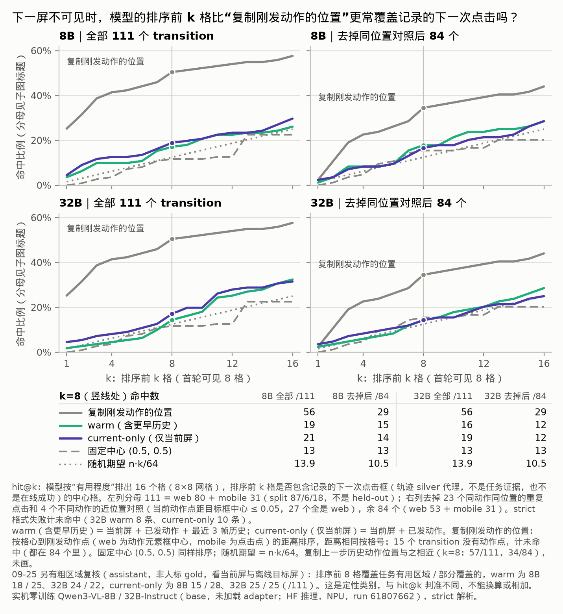
图 P1-01｜测的是下一屏不可见时，模型的排序前 k 格是否包含记录的下一次点击框中心（hit@k）；分母为全部 111 个 transition 和去掉 27 个同位置对照后的 84 个；实机零训练，strict 解析，标签是轨迹 silver 代理。
- k=8 时：复制动作 56/111；8B warm 19、current-only 21；32B warm 16、current-only 19；固定中心 13；随机期望 13.9。k=1 时复制动作已有 28/111，模型只有 2–5/111。
- 27 个同位置对照（23 个同动作重复点击，4 个近位置）全是 web。去掉后复制动作仍有 29/84，模型为 12–15/84。84 个里有 15 个 transition 没有可用的动作点，按未命中计，所以 29/84 是保守值，只算有点的 69 个是 29/69。
- 复制上一步历史动作的位置在 84 个里更强，k=8 为 34/84（全部 111 上是 57/111），说明位置延续不只来自重复点击。
- warm 对 current-only：全部 111 上，8B warm 新增命中 6 个、丢失 8 个，32B 新增 6、丢失 9。按 session 聚类 bootstrap（2000 次），各子集 hit 指标的 95% 区间都跨 0，例如 8B 全部配对的 hit@8 差为 −0.018 [−0.084, 0.047]。
- 8B 的 16 格有 107/111 条是按行优先顺序数下来的连续整数（见 3.3），所以 k<8 那段曲线主要反映"在一整行里从左往右数"，谈不上排出了用处。
09-25 对同一批网格输出只做过粗区域复核：排序前 8 格覆盖任务有用区域 / 部分覆盖的条数，8B warm 18/25、current-only 15/28，32B warm 24/22、current-only 25/25（/111）。这是定性类别，不能与 hit@k 换算。
旧主表和旧图都没有画复制动作这条线，而它是这个标签下最强的参照。它说明下一次点击这个代理标签本身和上一次点击高度相关；同一策略在 14 个 evidence case 上命中证据中心 0/23（§4），对读取任务证据没有帮助。
出处：reports/figures_20260929/phase1/P1-01.table.json；reports/phase1_20260923/metrics.json → predict.position_baselines、predict.paired_differences；reports/synthesis_20260929/digests/s1_phase1.md §2.3、§5 规格 A。
3.2 受限观察功能链的逐级留存
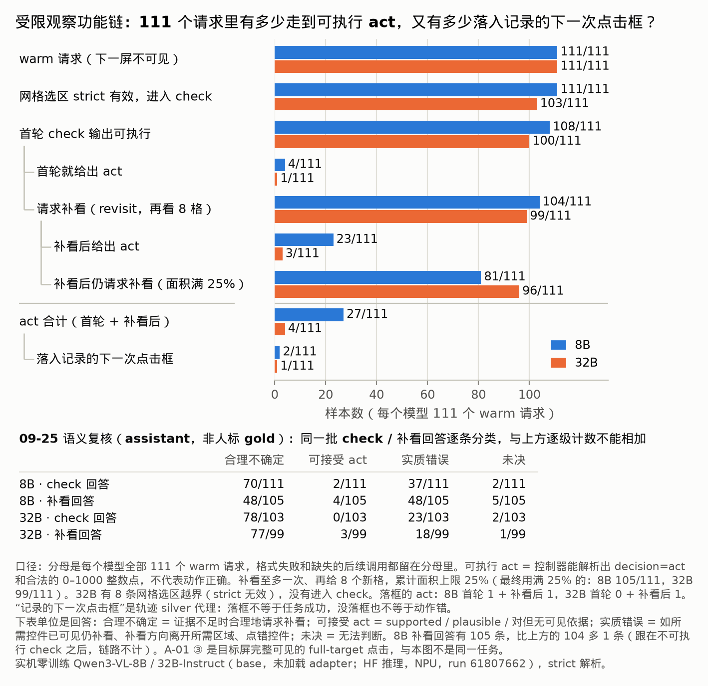
图 P1-02｜测的是每个模型 111 个 warm 请求在功能链每一级还剩多少，格式失败和缺失的后续调用都留在分母里；下方表格是 09-25 语义复核对同一批回答的分类，单位是回答，不能与逐级计数相加；实机零训练，strict 解析，落框按轨迹 silver 代理框计。
| 阶段 | 8B /111 | 32B /111 |
|---|---|---|
| 网格选区 strict 有效，进入 check | 111 | 103 |
| 首轮 check 输出可执行 | 108 | 100 |
| 首轮就给出 act | 4 | 1 |
| 首轮 check 请求补看 | 104 | 99 |
| 补看后给出 act | 23 | 3 |
| 补看后仍请求补看（面积已到 25%） | 81 | 96 |
| act 合计 | 27 | 4 |
| 落入记录的下一次点击框 | 2 | 1 |
"可执行 act"只表示控制器能解析出 decision=act 和合法的 0–1000 整数点，不代表动作正确。落框不等于任务成功，没落框也不等于动作错。32B 有 8 条网格选区越界，没有进入 check。
| 09-25 语义复核（回答） | 合理不确定 | 可接受 act | 实质错误 | 未决 |
|---|---|---|---|---|
| 8B check 回答 | 70/111 | 2/111 | 37/111 | 2/111 |
| 8B 补看回答 | 48/105 | 4/105 | 48/105 | 5/105 |
| 32B check 回答 | 78/103 | 0/103 | 23/103 | 2/103 |
| 32B 补看回答 | 77/99 | 3/99 | 18/99 | 1/99 |
可接受 act 是 supported、plausible 与"值对但无可见依据"的合计；实质错误包括所需控件已经可见还在补看、补看方向离开所需区域、点错控件。8B 的补看回答有 105 条，比上表"首轮 check 请求补看"的 104 多 1 条，那条跟在一个不可执行的 check 后面，链路指标不计（图 P1-02 的 FIGURES.md 记了它的 sample ID）。§6.1 里 "Phase 1 full-target 下一次点击 23/111 → 46/111" 是目标屏完整可见的点击，和这里的受限观察链不是同一任务。
成本也没有省下来。每个样本平均调用 2.95 次（8B）和 2.82 次（32B），各次调用耗时之和为 13.23 秒和 30.63 秒；一次完整目标屏调用只要 2.23 秒和 3.86 秒，局部链约慢 5.9 倍和 7.9 倍。扣掉重复编码的前缀后，局部链新增的目标视觉 token 平均为 688 和 635，而一张完整目标图是 481。这是 HF 实现、没有跨请求 KV 复用下的数字，不代表优化后的上限。
出处：reports/figures_20260929/phase1/P1-02.table.json；reports/phase1_20260923/functional_chain.json、functional_chain.md；reports/semantic_rollout_audit_20260925/phase1_actions/semantic_reviews.jsonl；docs/PHASE1_RESULTS_20260923.md:81–89。
3.3 选区热图：颜色是每格份额，条纹来自输出格式
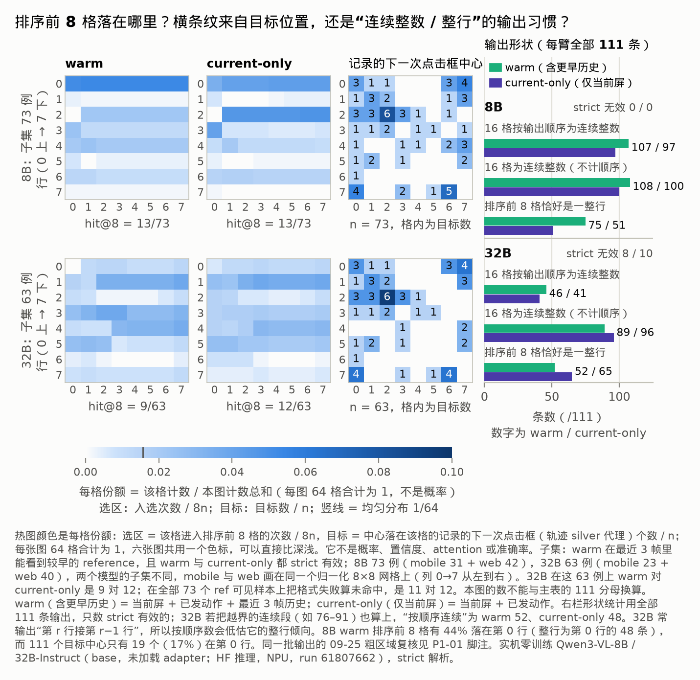
图 P1-03｜六张热图共用一个色标，颜色是每格份额（选区为入选次数 / 8n，目标为目标数 / n，每张图 64 格合计为 1），不是概率、置信度、attention 或准确率；热图子集要求 warm 能看到较早 reference 且两臂都 strict 有效（8B 73 例、32B 63 例），右栏形状统计用每臂全部 111 条；实机零训练，strict 解析。
旧图 reports/phase1_20260923/selection_heatmaps.png 的色标写成 "Selection probability"，metrics.json 的键名也叫 *_selection_probability。那些值是入选频率（入选次数 / n）；新图改用份额（入选次数 / 8n），数值差 8 倍，形状相同。两种都不是概率。旧文件保持原样。
横条纹主要是输出习惯。8B warm 有 107/111 条输出是按顺序的 16 个连续整数，75/111 条的排序前 8 格恰好是一整行，其中 48 条是第 0 行。按全部 111 条输出（每条 8 格）算，8B warm 的排序前 8 格有 44% 落在第 0 行；图 P1-03 的热图只用 73 例子集（584 次入选），那里是 42%。111 个目标中心只有 19 个（17%）在第 0 行。32B warm 有 8 条、current-only 有 10 条 strict 无效。
32B 的 warm 对 current-only 有两个数，引用时要带分母：在图中 63 例子集上是 9 对 12；在全部 73 个能看到较早 reference 的样本上、格式失败按未命中计，是 11 对 12。旧正文写的是后者，旧图画的是前者。8B 两种口径都是 13 对 13。这些子集的数不能和主表的 111 分母换算。
出处：reports/figures_20260929/phase1/P1-03.table.json、reports/figures_20260929/phase1/FIGURES.md（P1-03 节）。
3.4 原生坐标的提升主要来自抄动作坐标
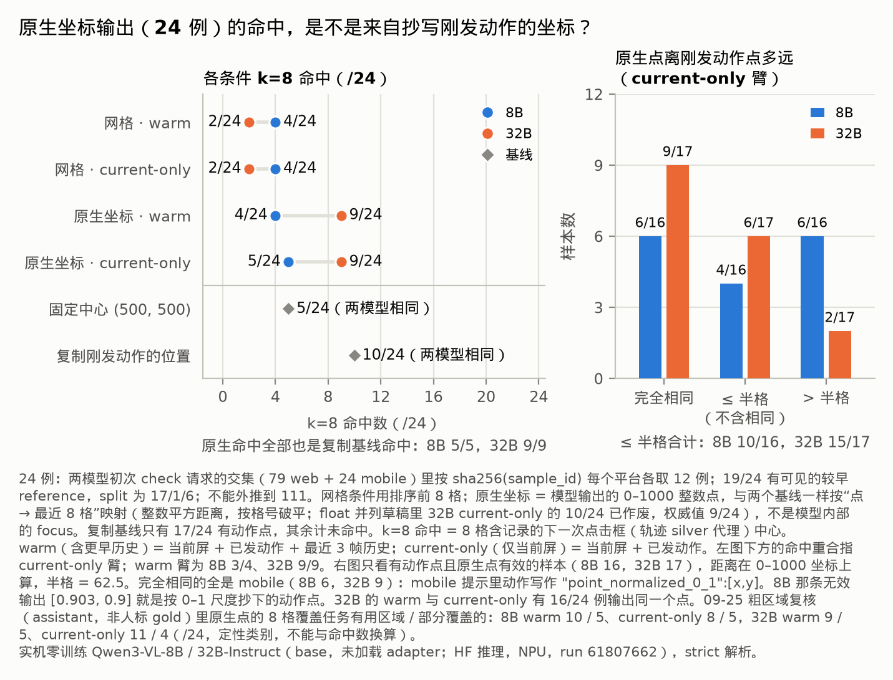
图 P1-04｜测的是同一批 24 例上改用 0–1000 原生坐标后的 k=8 命中（/24），以及原生点离刚发动作点多远（只看两者都有效的 8B 16 例、32B 17 例）；24 例是独立样本池，不能外推到 111；实机零训练，strict 解析。
32B 从网格的 2/24 升到原生坐标的 9/24，warm 和 current-only 都是 9/24，与复制动作的 10/24 相当（这个基线只有 17/24 有动作点，其余计未命中），固定中心 (500, 500) 是 5/24。距离上，32B 的 17 个可比样本中 9 个与动作点完全相同，全是 mobile：prompt 里动作写作 "point_normalized_0_1": [0.816, 0.311]，模型输出 [816, 311]；另有 6 个在半格以内。32B 的 9 个命中全部也是复制动作的命中，8B 原生 current-only 的 5 个命中也全部是。32B 的 warm 与 current-only 有 16/24 例输出同一个点。
同一批 24 例的 canvas 对照（把选中像素放回原位置、其余置灰）改善很小：8B 的记录框一致从 0/24 变为 2/24，它的 4 个 canvas act 里有 2 个点就是刚发动作的坐标；32B 仍是 0/24。09-25 的粗区域复核里，原生点映射出的 8 格覆盖有用区域 / 部分覆盖的条数为 8B warm 10/5、current-only 8/5，32B warm 9/5、current-only 11/4（/24），同样不能与命中数换算。
这组对照同时改了输出形式和控制器映射，不是单变量实验。它说明输出接口会影响空间表现，但 32B 的提升不能归因于更早历史，也不能算作模型超过了简单位置先验。
出处：reports/figures_20260929/phase1/P1-04.table.json；reports/phase1_native_focus_probe/metrics.json；reports/phase1_canvas_probe/summary.md；reports/synthesis_20260929/digests/s1_phase1.md §2.6。
3.5 同一批请求上的其他结果
- 显式 query 定位（Phase 1 grounding 任务，给完整目标屏和写明要点哪个控件的 query，97 例）：点落入记录的目标框 8B 73/97、32B 79/97。
- full-target 下一次点击（给完整目标屏、原任务和最近 3 帧）：命中记录的下一次点击框 8B 26/111（strict 23，另 3 条来自单对象数组的适配），32B 46/111。
- Layout judge（240 对）：与 silver 标签一致 8B 195/240、32B 186/240。分歧几乎都集中在两层噪声大的 silver 上：web 相似几何负例（一致 8B 30/55、32B 22/55）和 mobile 同布局换内容正例（23/40、25/40）。这组数不能用来给两个模型排序。web 那一侧两个 judge 对 reference 全部接纳（eval 42/42，SFT 剩余 57/57），所以旧 SFT 的"32B 接纳 303 行"实际上是 94 个 web transition 全收，加 7 个 mobile。
这三项在 09-25 做了看图语义复核，strict 与语义的并列见 §6.1。Phase 1b 扩出的数据（205 条新来源候选、83 条 search A→B、28 条审过的 SFT 分支）在 §7.1 统一盘点。
出处：docs/PHASE1_RESULTS_20260923.md:54–71；reports/synthesis_20260929/digests/s1_phase1.md §2.2、§2.5。
3.6 小结：口述网格不比位置先验强，输出接口会改变行为
在这个标签上，零训练的口述网格选区约等于随机和固定中心，最强的简单参照是复制上一次点击，这主要反映下一次点击代理标签的性质。两个模型都没有显示更早历史的净收益；current-only 本来就包含当前屏和刚发动作，所以这个结果不否定 session 内的当前布局复用。完整链路既不准也不省。输出接口会强烈改变行为：口述网格变成整行条纹，原生坐标变成抄动作坐标。这些都是零训练结果，推不出训练后能做到什么。它们引出了两件后续工作：09-24 换一种更自然的问法重测（§4），以及 09-27 重新设计输出和监督（§7）。
4. 先写计划再报点（09-24 基座诊断）
在 14 个 evidence case 上，让模型先用自然语言写观察计划、再报一个点，32B 的初次 8 格命中证据框中心 12/23（warm）和 10/23（current-only），高于直接报点的 2/23 和固定中心 (500, 500) 的 6/23。但 train 调点（只用 8 个 train case 选出的一个常数点）就有 17/23。32B 比固定中心多出来的命中全部来自 6 个同模板的地图（OSM）case，在其余 8 个 case 上它与固定中心逐字段相同。所以"超过固定中心"成立，"超过位置先验"不成立。几何上的差别也没有变成字段读取：补看后最终回答的 strict 分，32B 四个条件都是 3/24，8B 都是 0/24。32B 的直接报点在一半以上的 case 里就是复制动作。
做法：用户说过，他此前直接问模型"你认为我们下一个 step 需要看什么地方"，主观感觉效果不错（HANDOFF_BASEMODEL_PREDICTION_20260923.md:15）；这轮想近似复现这个问法。用的是近似提示 v2（approximate，prompt ID phase1c.approximate_natural_observation_plan.v2），由 handoff 根据用户描述自拟的英文指令。它不是用户原 prompt（原 prompt、模型设置和会话至今没提供），也不是 v1（v1 把证据需求提前写进了计划和直接报点的提示，在出任何模型输出之前就作废了）。诊断拆成三层：
- A：看任务、已见历史、当前屏和刚发动作，写出自然语言观察计划；
- B：下一屏仍不可见，把计划映射成一个 0–1000 整数点，控制器取点 → 最近 8 格；
- C：点封存后才取目标图，只给选中的像素，模型回答字段、补看一次或放弃。
路线有两条：直接报点（direct）和先计划再报点（plan→map，A 之后接 B）；历史臂有 warm 和 current-only。运行时是 09-24 在 run 61972044 上的 vLLM scoped fallback，base checkpoint，8B 共 174 次调用，32B 共 183 次（一个常驻引擎，只加载一次）。14 个 case 为 8 train、3 calibration、3 test，下面的数都是 pooled 描述，没有置信区间；证据框和字段真值是 assistant 视觉标注，不是人标 gold。
4.1 A/B/C 三层总览
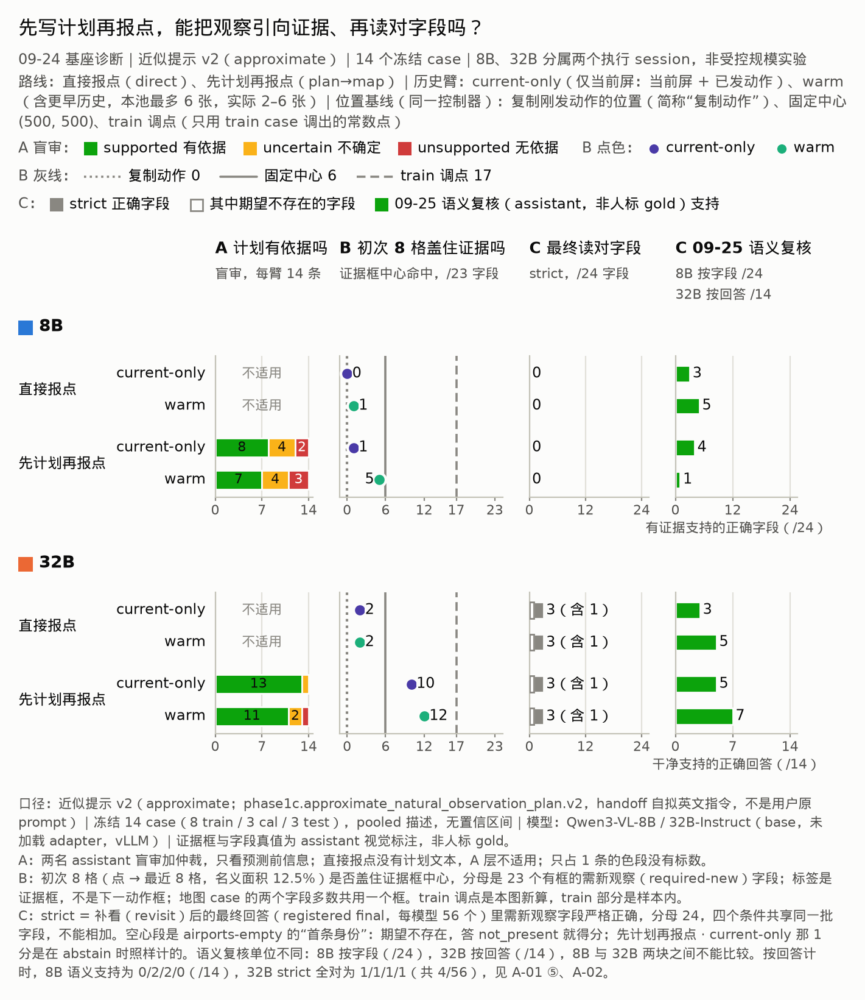
图 D-01｜同一 14 个冻结 case、近似提示 v2（approximate）下的三层结果：A 是计划的 assistant 盲审（每臂 14 条，只有先计划再报点有计划），B 是初次 8 格盖住证据框中心的字段数（/23），C 是补看后最终回答的 strict 字段分（/24，空心段是期望不存在的字段）和 09-25 语义复核（8B 按字段 /24，32B 按回答 /14，两块之间不能比较）；8B 与 32B 分属两个执行 session，不是受控的规模实验。
A 层：8B 的计划 15 条 supported、8 条 uncertain、5 条 unsupported（每模型 28 条），32B 是 24/3/1。评审是两名 assistant 盲审加第三方仲裁，两审一致率 8B 20/28、32B 22/28；32B 的第二审 28 条全判 supported，所以 22/28 说明不了评审可靠。32B 有 13/28 条计划写满 192 token 被截断（8B 1/28）。两个模型都没有出现 warm 比 current-only 更好。09-25 复核用了另一套类别：8B 的计划记为 15 supported、8 mixed、4 实质错误、1 未决，32B 记为 8 supported、18 plausible、2 mixed；两模型的 rubric 也不统一，报告明言 15 对 8 "不是能力排序"（ROLLOUT_SEMANTIC_AUDIT_20260925.md:75–79）。
B 层：初次 8 格命中证据中心，按直接报点 · current-only、直接报点 · warm、先计划再报点 · current-only、先计划再报点 · warm 的顺序，8B 为 0/1/1/5，32B 为 2/2/10/12（/23）。同一控制器下的位置参照：复制动作 0，固定中心 6，均匀随机点期望 3.3，train 调点 17。实际补看之后几何命中都上升了：32B 先计划再报点 warm 15/23、current-only 17/23，直接报点 warm 12/23、current-only 10/23（BASEMODEL_PREDICTION_DIAGNOSTICS_20260924.md:209–212）；8B 先计划再报点 warm 8/23、current-only 6/23，直接报点 warm 6/23、current-only 4/23（同文档:132）。两个模型各自四个条件的最终 strict 却仍然相同。
C 层 strict：8B 四个条件都是 0/24，32B 四个条件都是 3/24，图里写作"3（含 1）"。32B 每个条件的 3 分里各有 1 分来自 airports-empty 的"首条结果身份"：这个字段期望不存在，模型答 not_present 就得分；先计划再报点 · current-only 那 1 分是在最终决定为 abstain 时照样计的。strict 对字段容器和别名敏感：32B 的 38 个值不符，有界复核判为 25 个明显等义（其中 19 个是提示允许的 populated）、4 个明确错误、9 个不确定，这些不加回正式分。
C 层语义（09-25 复核，§6）：8B 有合法可见证据支持的正确字段为 3/5/4/1（每条件 /24），32B 干净支持的正确回答为 3/5/5/7（每条件 /14）。两者单位不同，不能画在一根轴上比，也不能拿来给两个模型排序。按回答计时，8B 语义支持是 0/2/2/0（/14，共 4/56），32B strict 全对是 1/1/1/1（共 4/56），与 §6.2 同一单位。
出处：reports/figures_20260929/diagnostics/D-01.table.json、percase_analysis.json（含 response_level）；docs/BASEMODEL_PREDICTION_DIAGNOSTICS_20260924.md §4–§7；reports/prediction_diagnostics_runs/20260924_approx_plan_v2_{8b,32b}_reviewed_r1/metrics.json；reports/prediction_geometry_baselines_20260924/metrics.json；reports/synthesis_20260929/digests/s2_basemodel_diagnostics.md §2。
4.2 逐 case：高出固定中心的命中来自地图模板
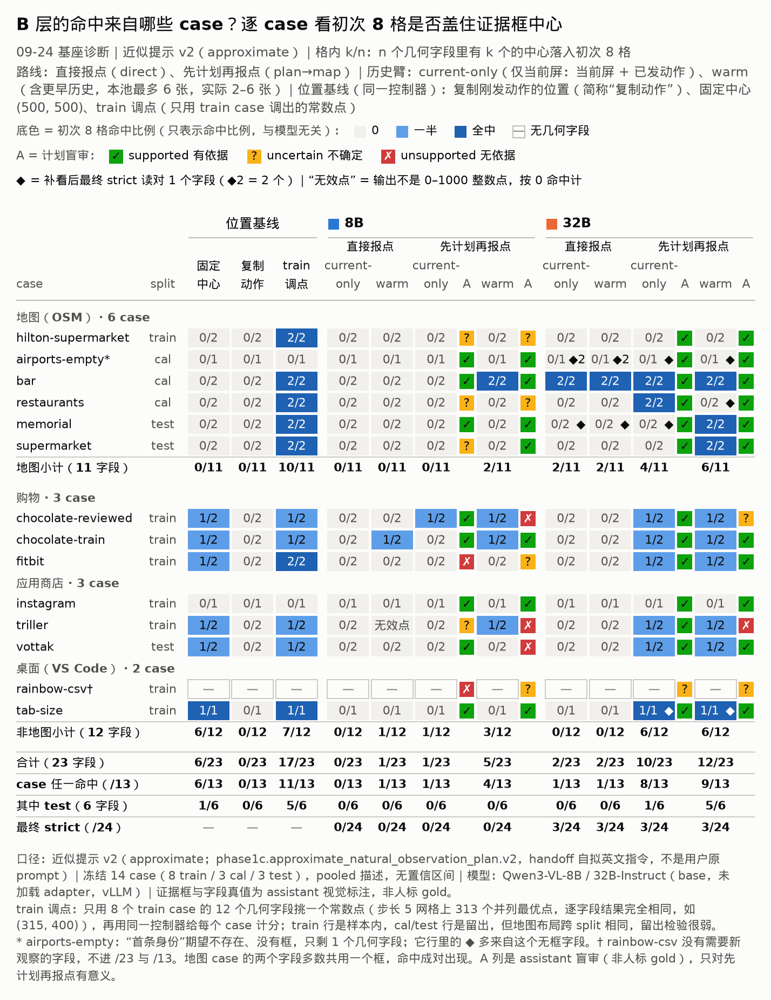
图 D-02｜逐 case 看初次 8 格盖住了几个证据框中心（k/n，n 为该 case 有框的需新观察字段数），和三条位置基线并排；地图 case 的两个字段多数共用一个框，23 个字段不是 23 个独立观测；近似提示 v2（approximate），assistant 标注的证据框。
- 32B 先计划再报点在 8 个非地图 case 上的命中与固定中心逐字段相同，两臂都是 6/12。
- 高出固定中心的部分全部来自 6 个地图（OSM）case：warm 6/11、current-only 4/11，固定中心 0/11。这 6 个 case 的证据都在同一个左侧结果栏，23 个几何字段里有 11 个来自这几个布局几乎相同的页面。
- train 调点只用 8 个 train case 的 12 个几何字段选出（例如 (315, 400)，步长 5 的网格上有 313 个并列最优点），再用同一控制器给每个 case 计分，得 17/23，其中地图 10/11、非地图 7/12，test 上 5/6。32B 先计划再报点 · warm 在 test 上也是 5/6。地图布局跨 split 相同，train 里还有一个地图 case，所以这个留出检验很弱。
- case 级"任一字段命中"（/13）：32B 先计划再报点 8 和 9，固定中心 6，train 调点 11。
出处：reports/figures_20260929/diagnostics/D-02.table.json、percase_analysis.json（constant_point_search、by_block、by_split）。
4.3 预测点从哪来
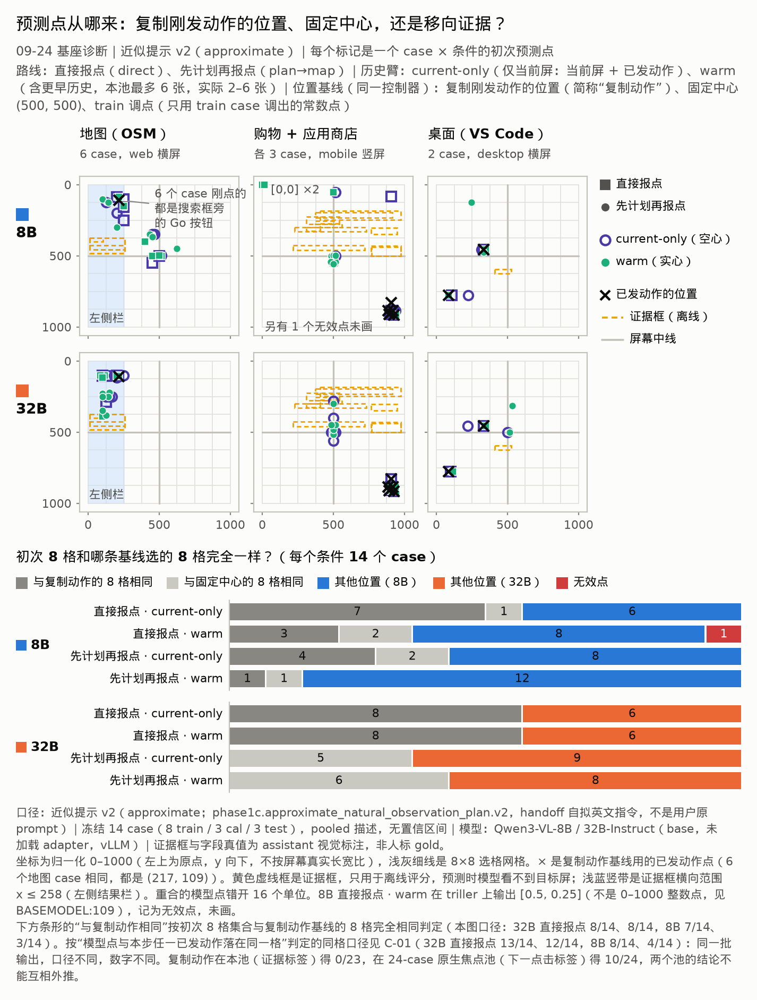
图 D-03｜比较模型给出的点与两条简单策略（复制动作、固定中心）的关系；下方条形按"初次 8 格与某条基线选出的 8 格完全相同"分类，每个条件 14 个 case；证据框是离线标注，预测时模型看不到目标屏；近似提示 v2（approximate）。
32B 直接报点在两个历史臂上都有 8/14 个 case 的初次 8 格与复制动作选出的 8 格完全相同。32B 先计划再报点在 8 个非地图 case 里有 7 个点的 x 正好是 500，选格与固定中心完全相同的有 5 个（current-only）和 6 个（warm）；只有地图 case 的计划点移到了左侧结果栏（x ≤ 250）。8B 的点更分散，但直接报点 · current-only 也有 7 个 case 与复制动作的 8 格相同。
"复制动作"有两种判法，数字不同，描述的是同一批输出。本图按"初次 8 格集合完全相同"判定，基线只取最后一个带坐标的动作点；§5.4 的图 C-01 按"模型点与本步任一已发动作同格"判定，32B 直接报点是 13/14、12/14，8B 是 8/14、4/14。6 个地图 case 本步的动作都是先填搜索框、再点旁边的 Go 按钮，基线点是 Go 按钮 (217, 109)，同格判法把搜索框也算上，所以数字更高。无论哪种判法，证据都不在动作处，复制动作在本池得 0/23。
出处：reports/figures_20260929/diagnostics/D-03.table.json、percase_analysis.json（copy_action_same_cell）；reports/prediction_geometry_baselines_20260924/case_records.jsonl。
4.4 小结：计划改变了几何，没有改变读取
自然问法确实能让模型写出常被判为合理的观察计划，但这是近似提示和 assistant 盲审，不是用户原体验的复现，也不是人标 gold。32B 的先计划再报点改变了几何：非地图页面上把点放到屏幕中线，地图页面上放到结果栏。它的几何分高于固定中心，但低于 train 调点，所以还不能说模型超过了位置先验。几何差别没有变成 strict 字段读取的差别。语义复核里先计划再报点对直接报点的方向在两个模型上相反（8B 先计划再报点 · warm 只有 1/24 个字段得到支持，实质错误 12 个，是四个条件里最差的；32B 先计划再报点 · warm 7/14 最好），09-25 也没有做同字段的配对路线对照，因此不能宣称哪条路线有功能优势。§8.3 的 E2 复用了这里模型自选的画布，看到的是同一件事：画布里多数没有证据。
先计划再报点还要多花调用：8B 每个 case 平均多 0.857 次调用。32B 每个条件 14 个 case 的请求耗时合计（只累加逐请求的时间，不含 382.73 秒的一次引擎加载）：先计划再报点 518.7 秒和 552.6 秒（52 次和 50 次调用），直接报点 194.4 秒和 240.5 秒（40 次和 41 次调用），顺序都是 current-only、warm（BASEMODEL_PREDICTION_DIAGNOSTICS_20260924.md §8.2）。
要严格回答"用户的问法是否有效"，需要用户提供当初的原始 prompt、模型和会话（§9.2 第 4 项）。
5. 训练与推理工程（Phase 1c，09-24）
09-24 在 run 61972044 上，两条工程线第一次在实机上跑通：8B completion-only LoRA 跑完 28 个 optimizer step 并通过 terminal audit（complete_engineering_fit_verified）；8B 和 32B 的 vLLM vision 跑通了单图到九图、192 token 长解码和多轮 check / 补看。这只过了工程门。28 步是 28 条不同样本各训练一次，loss 起伏由样本类型决定，不是收敛曲线。adapter 在 09-24 没有进入任何评测，当天落盘的 terminal audit 里 adapter_inference_smoke = null；09-29 起补做了 smoke 和同协议配对（§8.2）。另外有两个事实影响后续实验：32B TP2 引擎关闭 4 次，其中 2 次之后约 25 秒出现平台 NPU 故障（只是时间先后）；在 evidence 提示和直接报点下，模型给出的点大多落在刚发动作的位置上（先计划再报点时 32B 只有 2/14、0/14）。
本节都是工程事实（实机产物，多数有独立 audit），不涉及能力结论。镜像是 …vllm0.18_a898c92a:1.2.2，代码根 /workdir/cu_model，实测 runtime 见 phase1c_execution_20260924.md。
5.1 SFT：r1 为什么 OOM，r2 为什么能跑完
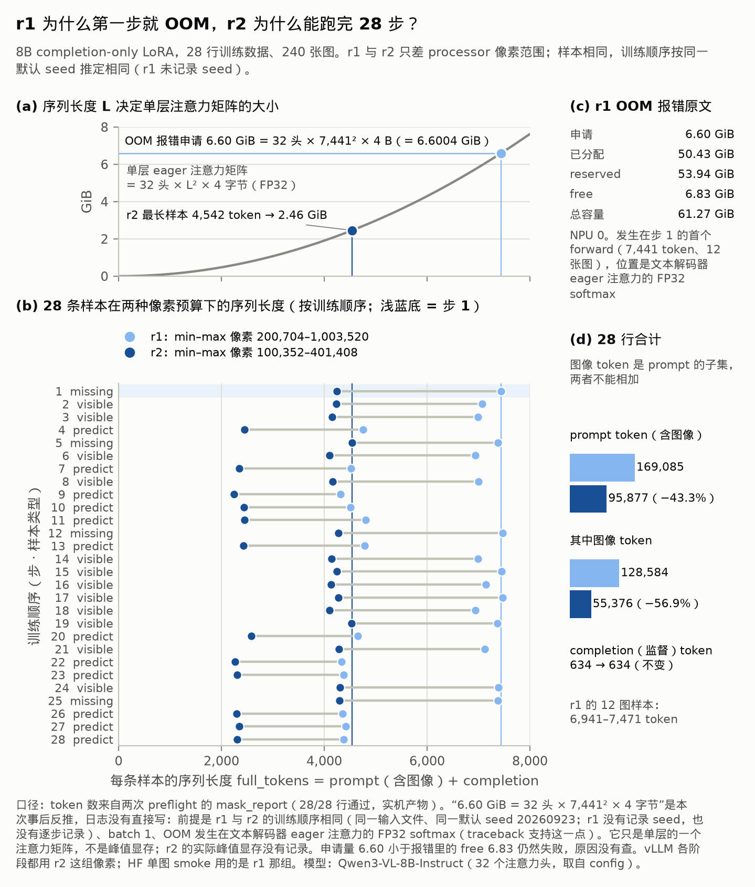
图 C-02｜比较 r1 与 r2 两种像素预算下 28 条训练样本的序列长度，并把长度换算成单层 FP32 注意力矩阵大小（32 头 × L² × 4 字节）；28 行、240 张图；token 数来自实机 mask 预检，"6.60 GiB 对应首步样本"是 09-29 的事后反推，前提是 r1 与 r2 训练顺序相同（r1 未记录 seed）。
训练数据是 28 行 assistant 审过的 completion-only 样本（12 predict、12 visible、4 missing），来自 12 个 transition、10 个 session，共 634 个监督 token。LoRA 设置：PEFT，rank 8、alpha 16，只挂第 32–35 层的 q_proj/v_proj，425,984 个可训练参数；lr 2e-4，batch 1，不 packing，max_grad_norm 1.0，seed 20260923。
r1 用像素范围 200,704–1,003,520，第一个 forward 在 eager 注意力的 FP32 softmax 处 OOM：申请 6.60 GiB，已分配 50.43、reserved 53.94、free 6.83，总容量 61.27 GiB。事后反推，6.60 GiB 正好等于首步样本（12 张图，r1 下 7,441 token）的单层注意力矩阵：32 × 7,441² × 4 字节 = 6.6004 GiB。这个反推的前提是 r1 与 r2 训练顺序相同（r1 没有记录 seed，按默认值推断）、batch 1；它只是一个注意力矩阵，不是峰值显存。
r2 把像素范围降到 100,352–401,408：28 行的 prompt token 从 169,085 降到 95,877（−43.3%），其中图像 token 从 128,584 降到 55,376（−56.9%），最长样本 4,542 token（约 2.46 GiB）。28 步全部跑完，terminal audit 的 8 个 gate 全过。r2 实测覆盖的检查有：真实 processor 下只有 completion 进 loss（28/28 行），文本和图像两项 causal 检查，每步梯度有限且非零，冻结参数前后摘要一致，adapter 保存，fresh reload 后 state SHA 一致且 probe logits 差为 0。第一次 audit 曾拒绝 r2，原因是审计脚本把像素预算写死成旧值，改成显式 100352/401408 后通过，结果本身没有变。r2 的逐步显存没有记录。
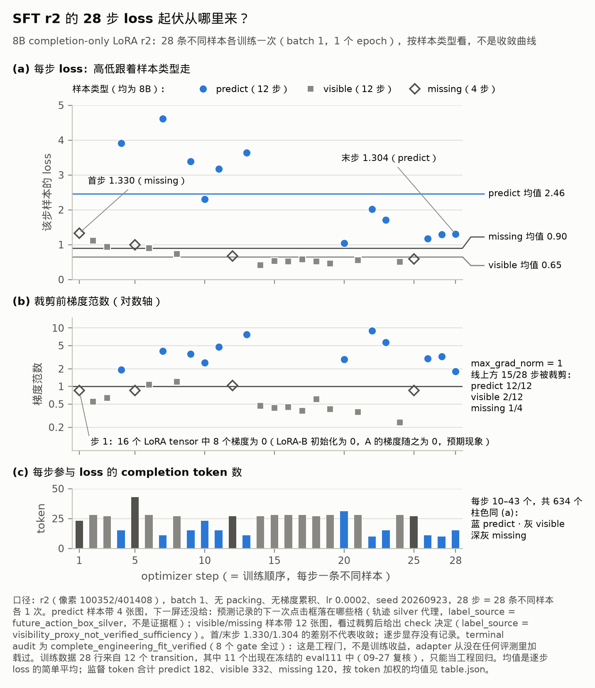
图 C-05｜8B completion-only LoRA r2 每个 optimizer step 训练的是哪类样本、loss 和裁剪前梯度范数多大；28 步 = 28 条不同样本各 1 次（batch 1，1 个 epoch）；实机训练日志，工程拟合，不是能力收益。
loss 的高低跟着样本类型走。predict 样本带 4 张图，下一屏还没给，要预测记录的下一次点击框落在哪些格（轨迹 silver 代理，不是证据框），loss 均值 2.46；visible 和 missing 样本带 12 张图，看过裁剪后给出 check 决定，均值 0.65 和 0.90。首步 1.330（missing）、末步 1.304（predict）的差别不代表收敛。15/28 步的梯度被裁剪，12 个 predict 步全在其中。第 1 步有 8/16 个 LoRA tensor 梯度为 0，这是 LoRA-B 初始化为 0 导致 A 的梯度为 0，属预期。
这次 SFT 学的是"下一次点击会落在哪里"的代理，不是证据定位：12 行 predict 的 label_source 都是 future_action_box_silver，格子由该 transition 记录的下一次点击框算出，参照截图按目标信息挖掘选出；16 行 visible/missing 的 label_source 是 visibility_proxy_not_verified_sufficiency。这 28 行的 12 个 transition 里有 11 个就在冻结的 eval111 里，10 个 session 全部在 eval111 里（§7.1），只能当工程回归。训练过的 transition webarena.33:5->6 同时是 evidence case hilton-supermarket，它的下一次点击框覆盖格 16–18 和 24–26，其中 24–26 恰好和它的证据格重合；这是个别巧合，不能推广成"predict 目标就是证据格"。评测 adapter 时这个 case 要单列或排除。
出处：reports/figures_20260929/phase1c/C-02.table.json、C-05.table.json；$data/cu_model/phase1c/training/engineering_fit_8b_20260924_r2/{train_metrics.jsonl,trainer_state.json,adapter_manifest.json,terminal_audit.json}；$data/cu_model/phase1c/training/preflight_8b_20260924_r{1,2}/mask_report.json；$data/cu_model/phase1b/supervision_semantic/supported_completion_only.jsonl；docs/PHASE1C_LIVE_RESULTS_20260924.md §5–§6。
5.2 vLLM 在哪些输入形态上真正跑过
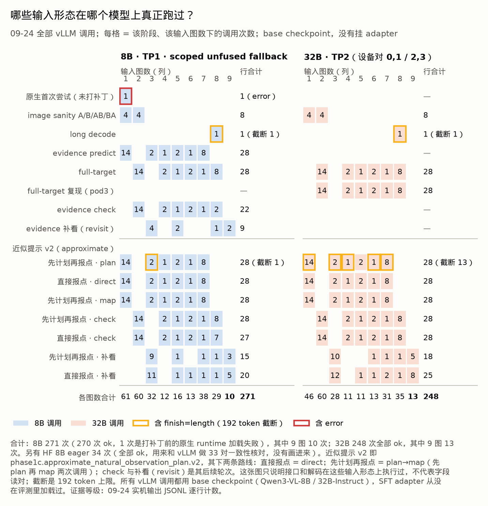
图 C-04｜09-24 全部 vLLM 调用按模型、阶段和输入图数计数，并标出截断和错误；只说明接口和解码在这些输入形态上执行过，不代表字段读对；全部是 base checkpoint，没有挂 adapter。
8B 用原生 vLLM-Ascend 第一次加载就失败：EngineCore profiling 阶段的 triton_split_qkv_rmsnorm_mrope 调用 hivmc 时带了该镜像不支持的 --enable-triton-kernel-compile=true，报 MLIRCompilationError，enforce_eager 绕不过去。解决办法是 scoped unfused fallback：把镜像里的 vllm_ascend 整包复制到容器本地 overlay，只改两个文件，挂在环境变量 CU_MODEL_ASCEND_UNFUSED_QWEN3VL=1 后面，走非融合的 MRoPE 路径；NPU 数值门在 6 个 BF16 形状上 atol=rtol=0.02 全过，Triton 路径零调用。overlay 在容器本地，每换一次 pod 都要重建并重新过数值门。
之后 8B 共 271 次调用（270 次 ok，1 次是打补丁前的原生加载失败），覆盖 1 到 9 张图，其中真实九图 10 次；32B 用 TP2 共 248 次，全部 ok，九图 13 次。32B 先计划再报点的 plan 调用有 13/28 在 192 token 处截断。8B 的 HF 与 vLLM 在 33 对请求上做了对照：请求、图像、prompt 和输入/视觉 token 数 33/33 一致，输出 token ID 与原文 26/33 相同；注册 schema 读出的 54/56 一致里有 52 个是两边都读成 null，不能叫语义等价。32B 核心链的 183 次调用在一个常驻引擎里完成，只加载一次（382.73 秒）；另一个引擎在另一对卡上复跑的 28 条 full-target 与 pod1 的原文、token ID、finish 逐条相同，strict 与 flat 都是 36/48。prefill、decode、TTFT 和显存都没有测。现有 vLLM runner 没有 LoRA 通路，vLLM-Ascend 上 Qwen3-VL 能否加载 LoRA 也没验证过，所以加载 adapter 走 HF+PEFT，09-29 的 E1 就是这样做的。
出处：reports/figures_20260929/phase1c/C-04.table.json；reports/phase1c_live_20260924/{runtime_patch_unfused_manifest.json,unfused_mrope_check_r1.json,hf_vllm_8b_pair_audit_r2.json,persistent_core32_audit_final.json}；docs/PHASE1C_LIVE_RESULTS_20260924.md §6。
5.3 32B 引擎关闭与平台故障的时间关系
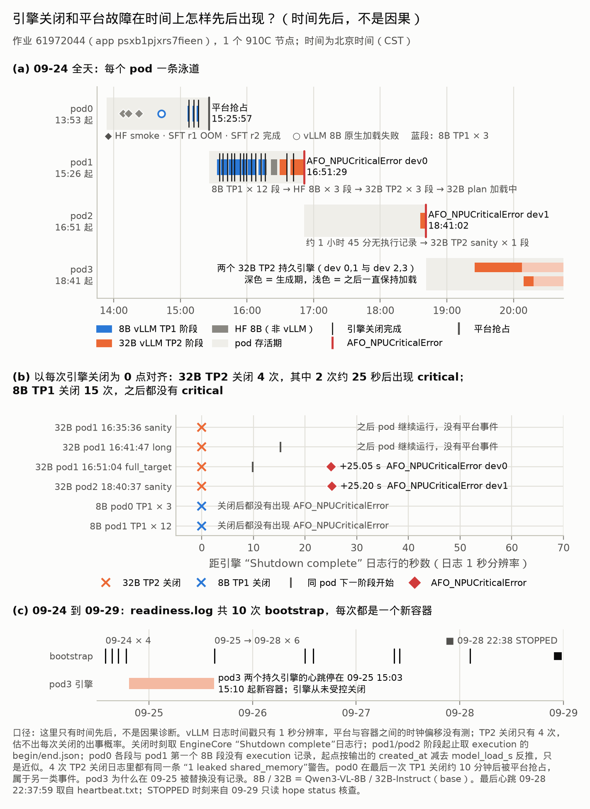
图 C-03｜09-24 每次引擎加载、关闭与平台事件的时间关系，以及之后换 pod 的记录；时间为北京时间，日志只有 1 秒分辨率，平台与容器间的时钟偏移没测；只是时间先后，不是因果诊断。
09-24 同一个 run 先后换了 4 个 pod：pod0 在 15:25:57 被平台抢占；pod1 在 16:51:29 出现 device 0 的 AFO_NPUCriticalError；pod2 在 18:41:02 出现 device 1 的同类故障；pod3 从 18:41:10 起完成了 32B 核心链。32B TP2 引擎一共关闭 4 次（pod1 16:35:36、16:41:47、16:51:04，pod2 18:40:37），后两次之后约 25.05 秒和 25.20 秒出现 critical，前两次之后 pod 继续运行。8B TP1 关闭 15 次，之后都没有 critical。4 次 TP2 关闭日志里都有同一条 "1 leaked shared_memory" 警告，出事和没出事的都有，区分不了。4 次里 2 次，样本太小，估不出每次关闭的出事概率，根因也没查到。
实际做法是 32B 多阶段任务改用常驻引擎：只加载一次，不主动关闭。pod3 的两个常驻引擎从没做过受控关闭，心跳持续到 09-25 15:03，随后 pod 被替换；到 09-28 一共 10 次 bootstrap，作业在 09-28 22:38:56 STOPPED。09-29 的新作业沿用了这个做法（§8.1）。
出处：reports/figures_20260929/phase1c/C-03.table.json；reports/phase1c_live_20260924/{tp2_exit_health_timeline.json,platform_attempts_1842.json,pod1_terminal_diagnostic_1711.json}；$data/cu_model/phase1c/run_20260924_infra_r2/logs/readiness.log。
5.4 evidence 提示和直接报点下，模型的点多落在刚发动作的位置上
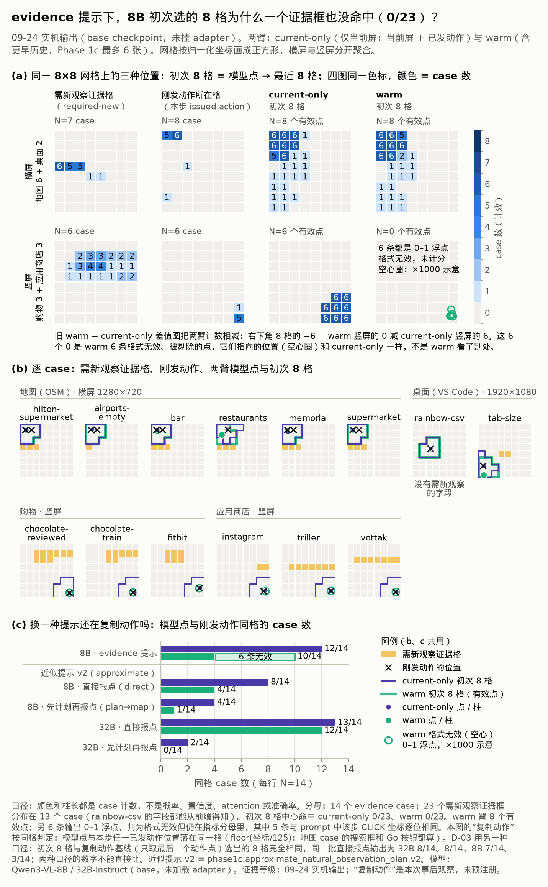
图 C-01｜在 evidence 提示下，把需新观察证据格、本步已发动作的位置和 8B 的初次 8 格画在同一个 8×8 网格上，并统计五条提示路线"模型点与本步动作同格"的 case 数（每条 14）；颜色和柱长都是 case 计数，不是概率或 attention；09-24 实机输出，"复制动作"是 09-29 的事后观察，没有预注册。
09-24 的 evidence 提示下（与 §4 的近似提示 v2 不是同一个提示），8B 初次 8 格在两臂都没盖住任何一个证据框中心（0/23）。模型点几乎都落在本步动作上：current-only 臂有 12/14 个点和本步某个已发动作落在同一格（14/14 在半格以内）；warm 臂 10/14 同格，其中 6 条是 0–1 浮点，按格式无效计分，这里按 ×1000 后的位置计入同格数（8 个有效点里 4 个同格）；这 6 条里有 5 条与 prompt 里该步 CLICK 坐标逐位相同。证据在结果列表里，动作在搜索框、Go 按钮或手机底部，两者不重合。
换成近似提示 v2 也一样：8B 直接报点 8/14 和 4/14 同格，32B 直接报点 13/14 和 12/14；先计划再报点基本不再复制（8B 4/14、1/14，32B 2/14、0/14）。这也解释了 §4 里固定中心为什么能超过直接报点。这里按同格判定；§4.3 的 D-03 按 8 格集合完全相同判定，32B 直接报点是 8/14、8/14。旧的 warm − current-only 差值图右下角有一片 −6，那是 warm 臂 6 条格式无效的点被剔除造成的，它们指向的位置和 current-only 一样，不是 warm 看了别处。同格按 floor(坐标/125) 判定；改用控制器的最近格心规则，近似提示 v2 有 3 个数各变 1（落在格线上的点），其余数不变。
出处：reports/figures_20260929/phase1c/C-01.table.json、reports/figures_20260929/phase1c/FIGURES.md（C-01 节与口径问题第 2、3、5 条）；reports/phase1c_live_20260924/evidence_8b_final_r1/metrics.json；$data/cu_model/phase1c/data/evidence_samples.jsonl。
5.5 小结：后续实验要守的约束
训练和推理链路都能在这个镜像上跑，但每一项都只是工程门。SFT 对像素预算很敏感，r2 的像素设置要保留；逐步显存从没记录过，扩大训练规模前需要先测。vLLM 依赖容器本地 overlay，换 pod 就要重建（09-29 在新 pod 上重建过，见 §8.1）。32B 引擎关闭后的平台故障根因未明，多阶段任务继续用常驻引擎。零训练基座直接输出坐标时（原生坐标输出、直接报点），坐标很大程度上在复制刚发动作的位置，§3.4、§4 的几何结果都要先扣掉这一点再解读。
6. 语义复核（09-25）
09-25 对 4,555 条真实原始输出（去重后 4,039 个语义单元）逐条看图复核，结果分两半。一半是旧 strict 分低估了模型：给完整目标图时，两个模型 48 个需新观察字段的核心语义都是 48/48，而 strict 只有 4/48（8B）和 36/48（32B）；显式 query 定位也有一批落在记录框外、其实点对了的回答。另一半是受限观察链确实弱：按同一单位（每模型 56 个最终回答）算，完整受支持的 8B 是 4/56，32B 是 20/56，两边 rubric 不同，不能排名。失败集中在三层接口：把计划落到足够的区域，只凭获准的像素认对任务所指的实例，判断证据什么时候够了。以上全部是 09-25 语义复核（assistant，非人标 gold），不能叫准确率或在线成功率。
做法：每条输出先回连它的请求，确认那一轮合法可见的任务、历史、当前屏、受限画布和此前的对话，再读原始回答；完整目标图只用于离线核对。每条记四个判断：事实对不对，对的内容有没有合法可见证据支持，已见信息够不够支撑当前决定，行动、补看或选区是否合理；JSON 嵌套、字段名、大小写这类格式问题单独记。类别有 supported（S，内容和证据都成立）、plausible（P，与任务相容但没有在线结果）、值对但无证据（CU，correct but unsupported，和 CU/BU 里的 computer use 无关）、合理不确定（AU）、实质错误（E）、缺失或未决（U）。4,555 条大多只审过一遍；二审只覆盖三块：完整目标图 56 条、显式 query 定位里记录框未命中的升级项、Phase 1 行动的 133 条材料性升级。复核者看过完整目标图，事后解释可能受结果影响。受限观察链的输出都来自 09-24 的近似提示 v2（approximate）。
6.1 strict 与语义并列
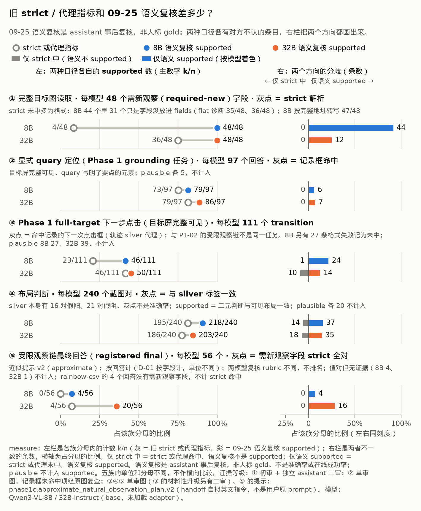
图 A-01｜同一批原始输出分别按旧 strict 或代理指标（灰）和 09-25 语义复核的 supported（彩）计数，右栏画出两者不一致的两个方向；五个面板单位和分母不同，不作横向比较；plausible 不计入 supported；assistant 复核，非人标 gold。
| 评测单元（每模型分母） | 旧指标 | 8B 旧 → 语义 | 32B 旧 → 语义 | 仅 strict 中 · 仅语义 supported（8B；32B） |
|---|---|---|---|---|
| 完整目标图读取（需新观察字段，48） | strict 解析 | 4 → 48（要求完整地址时 47） | 36 → 48 | 0 · 44；0 · 12 |
| 显式 query 定位（回答，97） | 记录框命中 | 73 → 79 | 79 → 86 | 0 · 6；0 · 7 |
| Phase 1 full-target 下一次点击（transition，111） | 命中记录的下一次点击框 | 23 → 46 | 46 → 50 | 1 · 24；10 · 14 |
| 布局判断（截图对，240） | 与 silver 一致 | 195 → 218 | 186 → 203 | 14 · 37；18 · 35 |
| 受限观察链最终回答（回答，56；近似提示 v2） | 需新观察字段 strict 全对 | 0 → 4 | 4 → 20 | 0 · 4；0 · 16 |
非 supported 部分：显式 query 定位 8B plausible 5、错误 13，32B plausible 5、错误 6；full-target 下一次点击 8B plausible 27、错误 34、未决 4（111 条里有 27 条格式失败，strict 按未中计，复核照常分类，其中 8 supported、7 plausible、11 错误、1 未决），32B plausible 39、错误 20、未决 2；布局判断两模型 plausible 各 20，错误 8B 2、32B 17。full-target 下一次点击是目标屏完整可见的点击，和 §3.2 的受限观察链不是同一任务，不能读成"语义复核把受限链从 2/111 抬到了 46/111"。
完整目标图上，8B 的 44 个 strict 未中里，31 个只是把值放在顶层、没放进 fields，10 个是 populated 与 results_present 的等义，3 个是省略了结果条目的类别前缀（如 Supermarket）；32B 的 12 个未中是 10 个 populated 加 2 个标题后缀。按只修字段容器的 flat 结构诊断，8B 是 35/48，32B 仍是 36/48。32B 这一行是 28 个语义单元（pod1 与 pod3 两份原始输出完全相同），不是 56 个独立样本。
strict 的错是双向的：full-target 下一次点击 32B 有 10 条 strict 命中但语义不是 supported，布局判断里与 silver 一致却不是 supported 的有 8B 14 条、32B 18 条。silver 本身有 16 对标为同布局却不能直接复用、21 对标为不同布局却可以复用，所以布局面板的灰点不是准确率；这一族的 supported 指"二元判断与可见布局一致"，与字段读取的 supported 不是一回事。plausible 没有在线执行，不能和 supported 合成成功率。
出处：reports/figures_20260929/audit/A-01.table.json；reports/semantic_rollout_audit_20260925/{full_target_independent_qa,phase1_layout_oracle,phase1_actions}/；docs/ROLLOUT_SEMANTIC_AUDIT_20260925.md §2、§5、§6；reports/synthesis_20260929/digests/s4_semantic_audit.md §2.1–§2.3、§2.7。
6.2 受限观察链断在哪一层
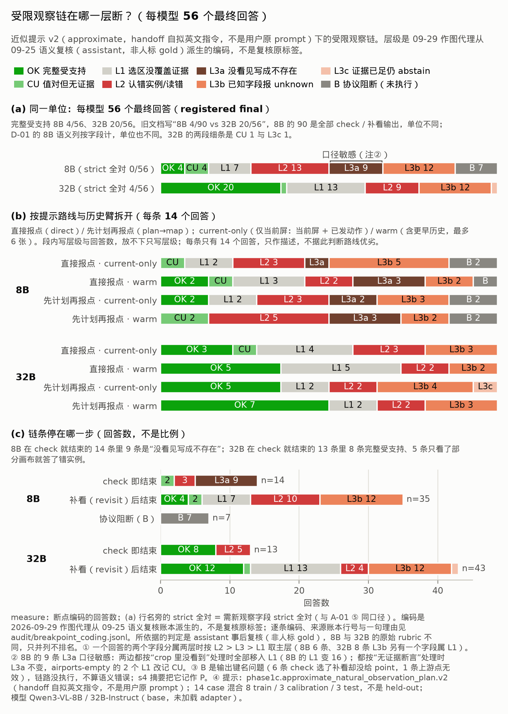
图 A-02｜近似提示 v2（approximate）下，每模型 56 个最终回答（registered final）按断点层级分类；层级是 09-29 作图代理依据 09-25 账本派生的编码，不是 09-25 复核的原标签；所依据的判定是 assistant 复核，非人标 gold；两模型 rubric 不同，只并列不排名。
层级定义：OK 是完整受支持；CU 是值对但没有合法可见证据；L1 是选区和补看都没覆盖证据、模型合理放弃；L2 是看到了局部像素但认错实例或读错（错卡片、把地图 marker 当列表首项、地址拼错）；L3 是证据判断出错，分三种：L3a 没看见却写成不存在，L3b 前缀已知或画布已可见的字段报 unknown，L3c 终止性证据已经看到仍然放弃；B 是协议阻断，链路没执行（切片摘要里曾记作 P，为免与 plausible 混淆改为 B）。
| 层级 | 8B /56 | 32B /56 |
|---|---|---|
| OK 完整受支持 | 4 | 20 |
| CU 值对但无证据 | 4 | 1 |
| L1 选区没覆盖证据 | 7 | 13 |
| L2 认错实例或读错 | 13 | 9 |
| L3a 没看见写成不存在 | 9 | 0 |
| L3b 已知字段报 unknown | 12 | 12 |
| L3c 证据已足仍放弃 | 0 | 1 |
| B 协议阻断 | 7 | 0 |
同一批回答的需新观察字段 strict 全对是 8B 0/56、32B 4/56。旧文档把这条链写成"8B 90 条里 4 条、32B 56 个里 20 条"，两边单位不同：8B 的 90 是全部 check / 补看输出，32B 的 56 是最终回答。同单位是 8B 4/56 对 32B 20/56；8B 那 4 条恰好都是最终回答，换单位数值不变。这个写法被交接文档和 09-27 复盘原样沿用过，引用时一律改用 56。§4.1 的 8B 语义列按字段计（/24），和这里按回答计也不是同一单位。
8B 在 check 就结束的 14 条里有 9 条是 L3a；32B 在 check 就结束的 13 条里 8 条完整受支持，5 条是只看了部分画布就答了错实例。8B 的 7 条 B 都是输出键名问题：6 条 check 选了补看，却只给了 instance（如 "cell 01"）或把点写在 revisit_point 键下，没有 point；1 条是上游直接报点输出了 [0.5, 0.25]。它们不算语义错误。
8B 的 90 条 check / 补看输出另有逐条分类：4 supported、20 合理不确定、4 值对无证据、19 缺失、43 实质错误。43 条里只有 28 条含字段内容错误，另有 11 条主要是补看点选错、4 条是决定加补看点的问题，所以 43/90 不是事实错误率。逐字段 180 项中有 16 项得到合法可见证据支持。
L3a 这 9 条对口径敏感，是一个没有定论的问题。它们都是 check 阶段报 not_present，而同样的输出在 airports-empty（真值确实为空）里被复核记为合理不确定。两边都按"crop 里没看到"处理时，9 条全部移入 L1，8B 的 L1 变成 16；都按"无证据就断言不存在"处理时，L3a 不变，airports-empty 的 2 条 L1 改记 CU。两个版本都在 breakpoint_summary.json 的 sensitivity 里。按这两种对称口径，8B 的 L1 在 5–16/56 之间，L2 + L3 在 25–34/56 之间；32B 不受影响。没看到证据的最终回答，8B 至少 16/56（按编码是 L1 7 + L3a 9，换口径只是在 L1、L3a、CU 之间挪动），32B 至少 13/56。另有 8B 6 条、32B 8 条 L3b 回答里有一个字段确实看不到，编码按 L2 > L3 > L1 取主层，没有记成 L1。E2 也遇到了同一个口径问题（§8.3）。
出处：reports/figures_20260929/audit/A-02.table.json、breakpoint_coding.jsonl、breakpoint_summary.json；reports/semantic_rollout_audit_20260925/diagnostic_8b/v2_restricted/{registered_final_chain_index.jsonl,coverage.jsonl}；reports/semantic_rollout_audit_20260925/diagnostic_32b/final_response_ledger.jsonl。
6.3 二审改判的方向
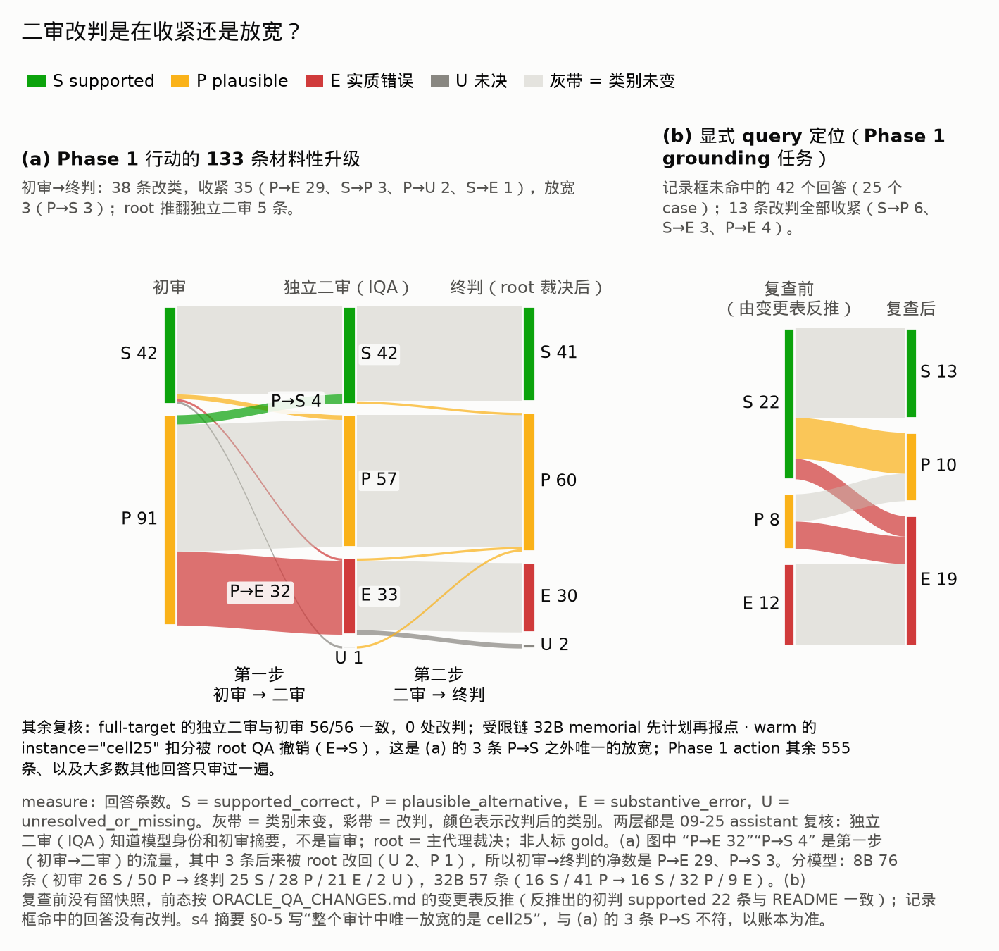
图 A-03｜二审改判是在收紧还是放宽：(a) Phase 1 行动 133 条材料性升级从初审、独立二审到 root 终判的流向，(b) 显式 query 定位中记录框未命中的 42 个回答复查前后；两层都是 assistant 复核，独立二审知道模型身份和初审摘要，不是盲审；(b) 的复查前状态由变更表反推。
Phase 1 行动的 133 条升级：初审 42 S / 91 P，独立二审后 42 S / 57 P / 33 E / 1 U，root 终判 41 S / 60 P / 30 E / 2 U（root 指当时主持复核、做最终裁决的 Codex 主代理）。初审到终判有 38 条改了类别，其中 35 条收紧（P→E 29、S→P 3、P→U 2、S→E 1），3 条放宽（P→S）；root 推翻独立二审 5 处。显式 query 定位那边 42 个未命中回答复查后 13 条改判，全部收紧。完整目标图的二审与初审 56/56 一致。整个审计里另一处放宽是 32B memorial 一条回答的 instance="cell25"：prompt 只要求 instance 是字符串或 null，画布上正确证据正好标为 cell25，root QA 撤销了这项扣分。两种风险都真实存在：strict 会漏掉对的回答，初审也会判得过宽。
Phase 1 行动链 688 条的最终分类是 103 S、70 P、298 合理不确定、2 值对无证据、199 实质错误、16 未决。199 条实质错误多数是点击、补看决定或选区问题，不是 199 个字段事实错误。428 条 strict 判为补看的输出里，298 条在证据不足时补看合理，126 条有决定或选区问题（目标控件已经可见还在补看，或一直往页面下方、灰区扫），4 条不可判。
出处：reports/figures_20260929/audit/A-03.table.json；reports/semantic_rollout_audit_20260925/phase1_actions/semantic_reviews.jsonl、phase1_layout_oracle/ORACLE_QA_CHANGES.md、diagnostic_32b/qa_overrides.json；docs/ROLLOUT_SEMANTIC_AUDIT_20260925.md §5。
6.4 四个典型断点
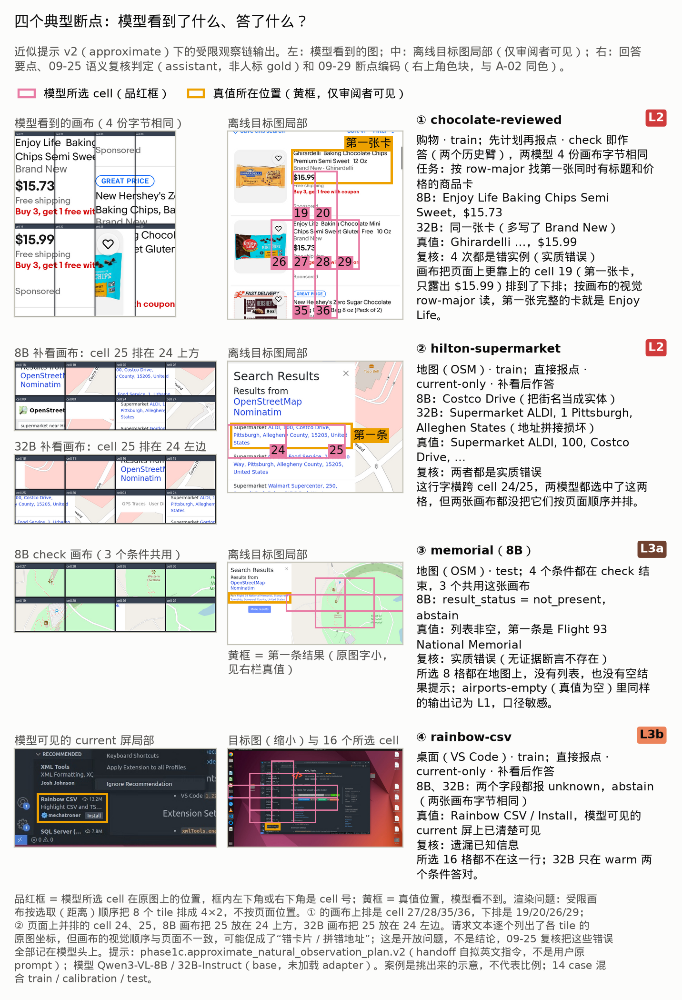
图 A-04｜近似提示 v2（approximate）下挑出的四个案例，展示 L2、L3a、L3b 在像素层面的样子；黄框是仅审阅者可见的真值位置；案例是示意，不代表比例；assistant 复核，非人标 gold。
- chocolate-reviewed（购物，L2）：8B 和 32B 在字节完全相同的画布上，都把第二张商品卡 Enjoy Life $15.73 当成第一张，真值是 Ghirardelli $15.99。
- hilton-supermarket（地图，L2）：同一行结果横跨两个格。8B 把街名 Costco Drive 当成实体，32B 拼出了残缺的地址。
- memorial（地图，L3a）：8B 的画布里只有地图，没有列表也没有空结果提示，它却报
not_present。 - rainbow-csv（桌面，L3b）：答案 Rainbow CSV / Install 在模型可见的当前屏上已经清楚显示，两个模型仍然报 unknown 并放弃。
受限画布的排法是一个没有定论的问题。画布按选取顺序把 8 个 tile 排成 4×2，不按页面位置：chocolate-reviewed 里页面上更靠上的 cell 19（第一张卡，只露出 $15.99）被排到了下排；hilton-supermarket 里页面上并排的 cell 24、25 被拆开。请求文本逐个列出了每个 tile 的原图坐标（8B 90/90、32B 99/99 条受限请求都有），但画布的视觉顺序和页面不一致；chocolate-reviewed 的任务原文要求"按 row-major 找第一张同时显示标题和价格的卡"，按画布的视觉顺序读，第一张完整的卡正好是 Enjoy Life。这可能促成了错卡片和拼错地址，而复核把这些错误全记在模型头上。E2 的 oracle 拼格与连续矩形对照（§8.3）给了一个间接读数，严格的检验仍需要只改 renderer、保持同一批像素。
出处：reports/figures_20260929/audit/A-04.table.json、reports/figures_20260929/audit/FIGURES.md（A-04 节）。
6.5 小结：能力在哪里，断点在哪里
基座已经有三样能力：给完整目标图时能读对字段，给显式 query 时能定位控件（8B 79/97、32B 86/97 受支持），预测前写出的观察计划经常合理。断点在三层接口：把计划落成足够的区域，只凭获准区域里的像素认对任务所指的实例，判断证据什么时候够了。这些问题放宽评分修不好，需要训练，也可能需要改 renderer。复核还暴露了上游数据的问题：部分 task、prefix 和 target 不衔接，任务已完成却没有 stop，prefix 已知的字段被当成 unknown，"第一条结果"和任意 marker 或卡片混淆。以上判断都来自 assistant 事后复核，大多只审过一遍；14 个 case 混合了 8 train / 3 calibration / 3 test，不是 held-out；这些诊断都没有加载 adapter。
7. 数据与方法（09-27）
09-27 做了两件事：复盘现有数据够不够训练，定第一版训练方法。现有落盘数据只够工程 smoke：审过能用的只有 28 行、12 个 transition、10 个 session、634 个监督 token，其中 11/12 个 transition 就在 eval111 里；而且它们是旧 schema（8×8 格号，predict 标签是记录的下一次点击框的 silver 代理），按新方法的 schema 算是 0 行。于是改为依托用户自己的 CU/BU agent framework 加低成本 judge 规模化产 silver，产数不设前置门。第一版方法是文本 ROI 的 completion-only SFT：<predict> 输出 [0,1000] 的 xyxy 矩形列表，按 S0→S4 推进。它只有设计，代码没写，用户也没有明确确认。几何复算表明，单个矩形能装下已有的证据标注（13/13），而现有的点 → 最近 8 格控制器即使给最优点也只能装下 9/13。
7.1 现有监督数据盘点
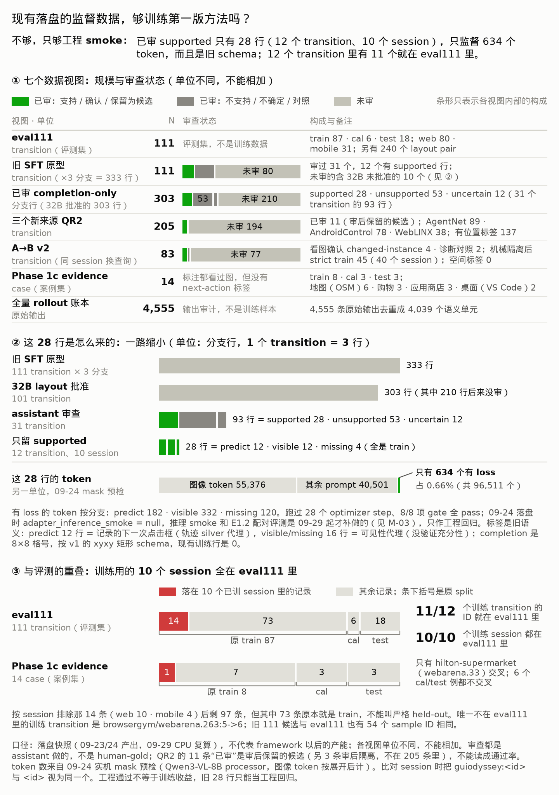
图 M-02｜当前落盘的"可训练数据"有多少、从哪来、和评测重叠多少；各视图单位不同（transition、分支行、case、原始输出），条形只表示视图内部构成，不能相加；09-23/24 产出的落盘快照，09-29 CPU 复算；审查都是 assistant 做的，不是人标 gold。
- 28 行的来历：旧 SFT 原型 111 个 transition 展开成 333 行（每个 transition 三个分支），32B layout 批准其中 101 个 transition、303 行；assistant 审了其中 31 个 transition 的 93 行，得到 supported 28 行（predict 12、visible 12、missing 4），另有 unsupported 53、uncertain 12，未审 210。这 28 行的 96,511 个 token 里只有 634 个 completion token 有 loss（0.66%）。训练跑了 28 个 optimizer step，8/8 项 gate 通过；09-24 落盘时
adapter_inference_smoke = null，推理 smoke 和同协议配对（E1.2）是 09-29 起才补做的（§8.2）。 - 标签语义是旧的：12 行 predict 的标签是记录的下一次点击框（轨迹 silver 代理），参照截图由目标反推选出；16 行 visible/missing 是可见性代理，没有验证证据是否充分；输出是 8×8 格号，不是 v1 的 xyxy 矩形。
- 与评测重叠：12 个训练 transition 里 11 个的 ID 就在 eval111 里（唯一不在的是
webarena.263:5->6），10 个 session 全在 eval111 里。eval111 里有 14 条落在这 10 个 session（全是原 train，web 10、mobile 4），按 session 排除后剩 97 条（train 73、calibration 6、test 18），其中 73 条本来就是 train，不能叫严格 held-out。另外，旧 SFT 的 111 和 eval111 是两个不同集合，只有 54 个 sample ID 相同。 - 其他候选池：三个新来源（QR2）205 条（AgentNet 89、AndroidControl 78、WebLINX 38，70 个 session），已审保留 11 条、未审 194 条，137 条有位置标签。"已审 11"是审后保留的候选，另有 3 条审后判 review/reject 的在 205 之前就隔离了，所以 11/205 不是通过率。search A→B v2 共 83 条（OpenHands 43、GUI-Odyssey 40，63 个 session），看图确认的 changed-instance 正例 4 条、诊断对照 2 条、未审 77 条，机械隔离后 strict train 45 条，空间标签 0 条；OpenHands 那 43 条里 OSM 地图 33 条，浏览器商城 0 条。
- Phase 1c 的 14 例里只有 hilton-supermarket 与训练 session 交叉，6 个 calibration/test case 都不交叉。14 例中有 4 例（hilton-supermarket、airports-empty、supermarket、memorial）的 session 也出现在 eval111 里，两边 split 一致，对 28 行训练不构成泄漏，但说明这些样本池之间不是 session 隔离的。session ID 的写法也不统一（eval111 写
guiodyssey:<id>，Phase 1c 写<id>），以后划 held-out 前要先归一化。
09-27 的决定是：直接依托用户的 framework 和 WAL judge 或低成本视觉 judge，随真实 benchmark 批量产 silver。不设样本上限，不要求逐例人工批准，也不以"先验证方法收益"作为产数前置条件；另取小份按任务、状态和来源分层的独立抽查，校准标签语义和偏差。framework 接口、是否支持 snapshot/fork、judge 精度都没有审查过；"WAL judge"具体指什么，到 09-30 才由你解释（见 §9.2 第 1 项）。
出处：reports/figures_20260929/method/M-02.table.json；docs/PROJECT_REVIEW_SFT_READINESS_20260927.md §3、§5；reports/synthesis_20260929/digests/s5_review_method.md §2.1。
7.2 证据框几何：单矩形 13/13，任意 8 格 12/13，现有控制器 9/13
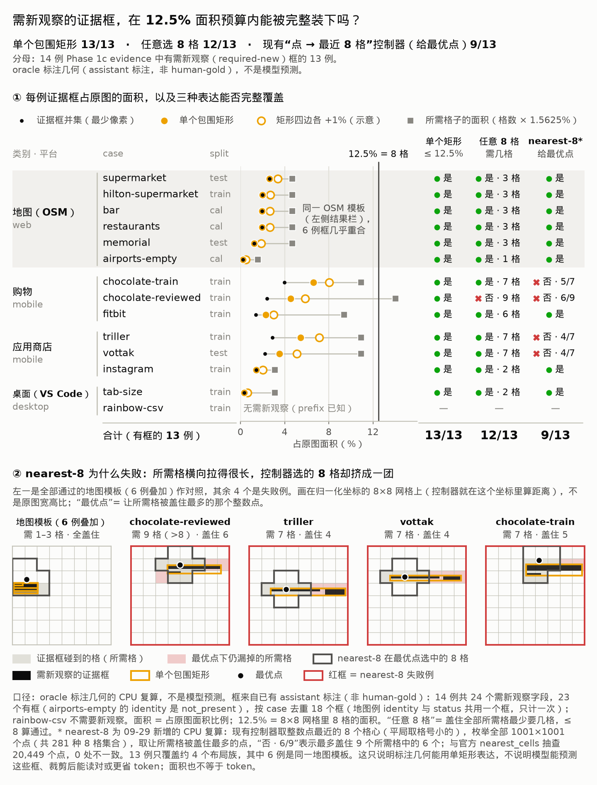
图 M-01｜已有标注里需新观察的证据框，在 12.5% 面积预算（等于 8×8 网格的 8 格）内能否被三种表达完整装下：单个包围矩形、任意选 8 格、现有"点 → 最近 8 格"控制器且给最优点；分母为有需新观察框的 13 例；CPU 复算，基于 assistant 标注的 oracle 几何，不是模型预测。
- 单个包围矩形 13/13 都在 12.5% 以内，最大 6.61%；四边各加 1% 后最大 8.02%。
- 任意选 8 格能完整覆盖 12/13。唯一失败的 chocolate-reviewed 两个框的并集只占 2.42%，但跨了格边界，需要 9 格。
- 现有控制器取离一个整数点最近的 8 个格心。枚举全部 1001×1001 个点，一共只能产生 281 种不同的 8 格集合；即使给出最优的点，也只有 9/13 能完整覆盖。失败的 4 例都是移动端的横向长条字段，最优点下最多覆盖 chocolate-reviewed 6/9、chocolate-train 5/7、triller 4/7、vottak 4/7。所需格是一整条横带，而最近 8 格总是一团。
- 13 例里有 6 例是同一个 OSM 地图模板的左侧结果栏，框几乎重合，calibration 的 3 例全是地图。13/13 实际只覆盖约 4 个布局族，不能外推成"单矩形普遍够用"。
交接文档写的"8 个网格只能覆盖 12/13"漏了"任意"二字。任意 8 格（12/13）和现有控制器（9/13）是两回事，后者是给最优点时的上限。这张图只说明标注几何能用单矩形表达，不说明 prefix 能预测出这些框、裁剪后读得对、证据充分，也不说明更省 token；面积不等于 token，processor 的最小分辨率可能把小 crop 放大。读得对不对，由 §8.3 的 E2 在同一批 case 上补测了。
出处：reports/figures_20260929/method/M-01.table.json；reports/method_decisions_20260927/region_geometry.json；reports/synthesis_20260929/digests/s5_review_method.md §6.1（逐例表）。
7.3 第一版方法与 S0→S4 路线
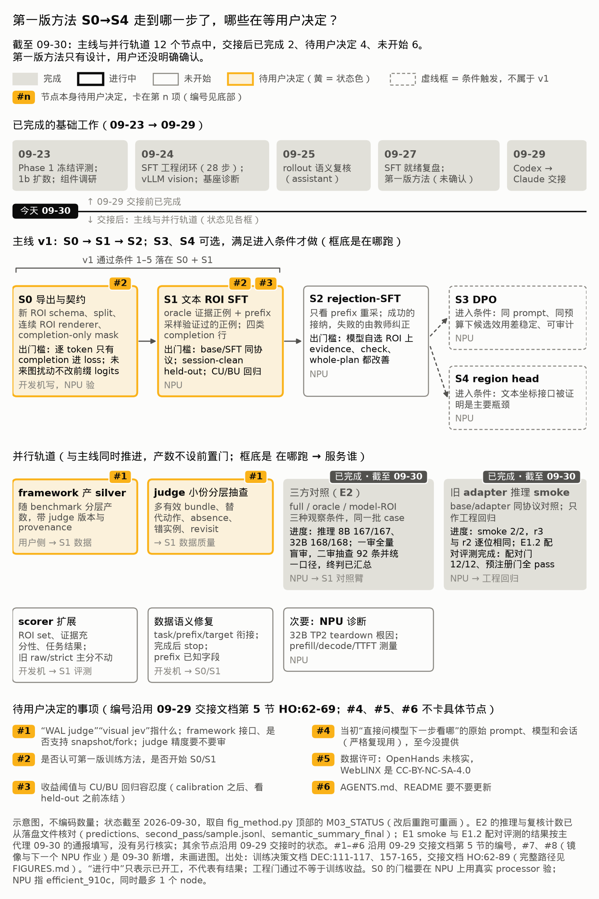
图 M-03｜第一版训练方法 S0→S4 路线图，示意图，不编码数量，状态截至 2026-09-30；第一版方法只有设计，用户未明确确认；#1–#6 沿用 09-29 交接文档第 5 节的编号，就是 §9.2 的第 1–6 项，#7、#8（镜像与下一个 NPU 作业）是 09-30 新增，没有画进图。
第一版要训练的是一条行为链：下一屏不可见时，根据合法 prefix 和刚发动作预测需要观察的证据区域；拿到获准像素后判断证据是否充分，不足时补看。layout 复用只用来生成候选和空间先验，证据是否充分单独监督。
- 输出：
<predict>写{"regions":[[x1,y1,x2,y2],...],"needs":[...]}，坐标满足0<=x1<x2<=1000、0<=y1<y2<=1000。一个 region 列表是一个要整体观察的 bundle（内部是 AND），标签侧的acceptable_bundles是可互相替代的 bundle（之间是 OR）。needs可省略，词项只能来自任务或 prefix。单矩形是主基线，多矩形是扩展；区域数和面积预算在 calibration 上定，不预设最优值。 - 训练行：四类 completion-only 行，分别是 predict、证据充分的 check 或行动、证据不足的 check 加补看、补看之后的 check。每行只监督最后一个 completion；此前的 assistant 轮次全部 mask，但它们仍然影响条件分布，所以同一分支的 predict、实际 crop、check 和结果要用 hash 绑定。
- 标签：正例的来源分
oracle（oracle 证据正例）和prefix_sampled_validated；首次 crop 不充分不自动算坏预测，效用分四层记录（初始 ROI 效用、check 是否正确、整体计划效用、行动效用，没执行的分支记not_measured）。judge 在逻辑上分成隐藏真值、只读获准 crop 的 reader、汇总判定三个角色，不要求多调三次模型。 - 路线：S0 冻结新 schema、split、ROI renderer、completion-only mask 和 causal audit；S1 用 oracle 证据正例加 prefix 采样验证过的正例做文本 ROI SFT；S2 用当前 checkpoint 只看 prefix 重新采候选，做 rejection-SFT。S3 DPO 只有在同 prompt、同预算下候选之间有稳定可审计的效用差时才进入；S4 region head 只有在文本坐标接口被证明是主要瓶颈时才进入。v1 不加 head，也不做 DPO。
- v1 通过条件：manifest 固定 split、hash、
acceptable_bundles、来源、judge 版本和实际授权像素，train 与 held-out 没有 session 或近重复交叉；新 verifier 在真实 processor 上逐 token 证明只有末尾 completion 有 loss，未来图扰动不改变更早 prefix 的 logits；新 trainer 保留有限 loss/梯度、冻结参数摘要、保存/reload 和 terminal audit；base 与 SFT 在 session-clean held-out 上同协议比较，完整目标图、oracle ROI、模型 ROI 分列，并报完整观察的 CU/BU 回归；judge 小份分层抽查报告各类分歧。收益阈值和允许的回归幅度在 calibration 之后、看 held-out 之前冻结。 - 对照矩阵：base 对 SFT；完整目标图、oracle 证据 ROI、模型自选 ROI 三方；current-only 对 warm；模型 ROI 对固定中心、复制动作、随机；教师 ROI 对模型出错的 ROI；受限链对完整观察的 CU/BU 回归。
supported + plausible不写成 accuracy。 - 现有代码不能直接当正式 trainer：
train_smoke.py写死了 28 行、20–40 步、rank 8、最后四层 q/v；verify_loss_mask.py只认旧 schema；build_evidence_requests.py只有点 → 最近 8 格控制器和按选取顺序排 tile 的画布。v1 要新写 export、verifier、trainer 和连续 ROI renderer，复用已经实机验证过的 processor、causal audit、LoRA 保存与 reload 部件。
截至 09-30，S0–S4 都没开工。M-03 把两条轨道标为交接后已完成：三方对照（E2），推理 8B 167/167、32B 168/168，一审全量盲审、二审抽查 92 条并统一口径；旧 adapter 推理 smoke，smoke 2/2，r3 与 r2 逐位相同，E1.2 配对门 12/12，预注册门全部通过。12 个节点里交接后已完成 2、待用户决定 4、未开始 6。数据语义修复是未开始、没有阻塞，交接文档第 6 节把它列为开发机上可以直接做的事。结果见 §8。
09-27 还撤回了一个早期论据："Mobile3M 约 68% 重复访问、ProCUA 约 64% 含环，说明 session 内同布局新内容高频"。前者是按 app 做 BFS/random-walk 并剪枝近重复节点，后者的环是视觉状态图的回路，包含回退和恢复，两者都没有给出本项目需要的频率。以后只在真实任务 session 上统计。同批修正的还有：URL 或任务模板只能当候选信号；attention pilot 和 hidden-state probe 从没运行；自动 layout 信号不能直接扩训练集（32B 接纳的 149 对里有 16 对不能直接复用）；当前实现下局部观察更慢，是负结论，不是"未测"。
出处：reports/figures_20260929/method/M-03.table.json；docs/SESSION_PREDICTION_TRAINING_DECISIONS_20260927.md §2–§7；docs/PROJECT_REVIEW_SFT_READINESS_20260927.md §2；reports/synthesis_20260929/digests/s5_review_method.md §2.2、§3、§4。
7.4 小结：数据是主要瓶颈
按新 schema 现在一行可用的训练数据都没有，要靠 framework 批量产出，而 framework 接口和 judge 精度还是未知数。方法设计对准了 §6 的三个断点：矩形输出替代点 → 最近 8 格（后者装不下横向长条证据），check 与补看的行单独监督实例识别和证据充分性。09-27 时还没有证据表明模型能从 prefix 预测出这些区域，也没有训练收益的测量；§8 的两组实验先回答了读取这一侧和旧 adapter 这一侧。
8. 09-29 新实验
09-29 到 09-30 在新作业上做了两组实验。E1 看旧 adapter 能不能用、学到了什么：重训的 r3 与 r2 逐位相同，同协议对照显示它学到的主要是输出格式和模板，看不出任务能力。E2 在 14 个 evidence case 上做单轮、不许补看的读取，只换模型看到的画面：连续矩形裁剪下，两个模型和完整目标图一样读对全部需新观察字段；换成模型自选区域后几乎读不对，因为证据多数不在画面里。运行时在新 pod 上重建后与 09-24 一致，32B 用常驻驱动没有关闭过引擎，镜像建议现在不建。E1 和 E2 的数字都是终版；E2 的语义复核经过一审和二审，二审改判的 17 行已经并入。
8.1 新作业、运行时与镜像
新作业是 run 62413773 / app psxeh0pxrs7fieen，队列 efficient_910c，1 个 worker × 16 die。提交配置从 09-24 验证过的 jobs/phase1c/phase1c_20260924_infra_r2.hope 复制，只改了 app 名、队列和输出根，并在 [others] 加了 dolphinfs.force.user = luyuquan（jobs/phase1c/phase1c_20260929_effi_r1.hope）。09-29 19:54 提交，19:55 pod 起来；09-30 15:08:21 经你同意停止，已从队列释放。hopex 身份门和共享盘写入探针都通过。
- vLLM 回退补丁（overlay）在新 pod 上重建，两个被改文件的 after-SHA 与 09-24 冻结 manifest 一致；NPU 数值门通过。
- 8B image-sanity 4/4，输出 token 为 24/38/51/57，与 09-24 相同。
- 32B 用新写的常驻驱动
scripts/phase1c/run_vllm_hold.py：一次加载 TP2 引擎，依次跑 sanity（4/4，输出 token 24/38/57/57，与 09-24 pod2 相同）、full-target（28/28）和 E2（168/168），全程engine_load_count=1，不调用任何关闭 API，一直 hold 到作业停止。这样避开了 09-24 两次"TP2 引擎关闭约 25 秒后出现 AFO_NPUCriticalError"的模式；那只是时间先后，根因仍然未知。
出处：$data/cu_model/phase1c/run_20260929_effi_r1/{runtime,smoke,logs}/；32B 的输出与回执在 $data/cu_model/phase1c/e2_matched_obs_20260929/predictions/qwen3vl32b/、hold32/receipts/；reports/synthesis_20260929/E_RESULTS_BRIEF.md。
镜像的建议是现在不建。S0/S1 的文本 ROI completion-only SFT 没有识别出 1.2.2 镜像里缺的依赖；每换一个 pod 必须重做的只有 vLLM-Ascend 的 scoped unfused overlay，每个新 pod 跑一次幂等脚本 jobs/docker/apply_runtime_overlay.sh 即可。09-29 在真 worker 上验证过这个脚本：首跑生成 overlay，重跑报 already_applied，数值门通过，verify_image.sh --with-npu 在新会话下修正了比对脚本的一处符号链接误报后 56 项全部 PASS，用它生成的 overlay 跑 8B image-sanity 4/4；代价是每个新 pod 多一次约 130M 的容器本地复制。Dockerfile 草案备用，镜像没构建也没推送；镜像那条路（构建期以 root 身份、在没有 NPU 的机器上、写进 /opt）和 bootstrap 自动执行都还没验证。详见 DOCKER_IMAGE_PLAN_20260929.md，待你拍板的事项汇总在 §9.2。
8.2 E1：旧 adapter 学到了什么
旧 r2 的权重文件 adapter_model.safetensors 是 09-24 以另一个 uid（1500000196）写的 600 文件，开发机和新 worker 的 DolphinFS 身份都是 luyuquan，两边都读不了；加载函数默认要先校验这个文件的 SHA，所以旧 adapter 不能直接复用。没有改原文件权限，而是按同一镜像、同一脚本、同一数据和配置重训了 r3：28 步的 loss 和裁剪前梯度范数与 r2 逐位相等，mask report 的计数和逐例指纹相同，冻结参数摘要 26a568f7… 前后一致，adapter 的 state_sha256（605687f3…）和权重文件 SHA（5448dc2a…）都等于 r2 记录的值，terminal audit 通过（complete_engineering_fit_verified）。所以 r3 就是 r2，下面的结论同样适用于 r2。换镜像或卡型后逐位复现不保证。
adapter 推理 smoke 2/2 通过：用 HF+PEFT 从 r3 目录加载 adapter 后生成，两个样例是训练过的 webarena.263:5->6 predict 行和 webarena.252:6->7 visible 行，只证明能加载、能生成。r3 的 terminal_audit.json 里 adapter_inference_smoke 仍是 null，因为 smoke 是审计之后单独跑的，结果另存在 $data/cu_model/phase1c/run_20260929_effi_r1/e1/。
E1.2 做同协议配对：同一进程里先跑 base，再挂 r3 跑 adapter（HF+PEFT，bf16 eager），303 行每行两边各算一次 completion-only NLL（与训练同一 mask，参照是 silver 补全）和一次贪心生成（最多 64 个新 token）。303 行分四组：训练过的 28 行；同样本的未训练臂 8 行（全是 missing）；同 session 的其他样本 54 行；session-clean 213 行（排除全部 10 个训练 session 后的 33 个 session、71 个样本 × 3 类）。配对门：前 12 行在 disable_adapter() 下重新生成，12/12 与 base 逐 token 相同。
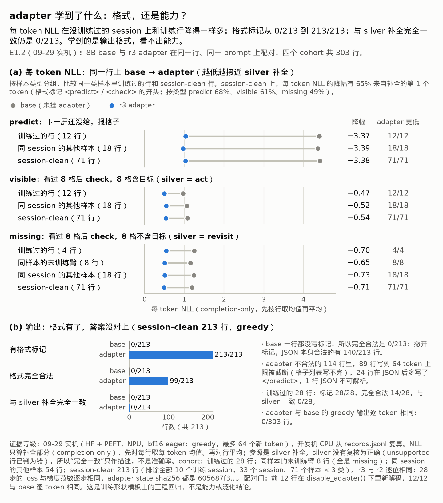
图 E-03｜E1.2（09-29 实机，8B，HF+PEFT）上 base 与 r3 adapter 在同一行、同一 prompt 下配对：上半比较每 token NLL（completion-only，先对每行取均值再平均），下半看 session-clean 213 行的输出格式和与 silver 补全的一致情况；silver 补全没有复核为正确，一致率只作描述；这是格式学习的证据，不是能力或泛化结论。
| 组 | 行数 | base NLL | adapter NLL | adapter 更低 |
|---|---|---|---|---|
| 训练过的行 | 28 | 2.48 | 0.73 | 28/28 |
| 同样本的未训练臂 | 8 | 1.15 | 0.50 | 8/8 |
| 同 session 的其他样本 | 54 | 2.22 | 0.67 | 54/54 |
| session-clean | 213 | 2.23 | 0.69 | 213/213 |
- 按样本类型比，没训练过的 session 上 NLL 的降幅和训练行几乎一样：predict 类训练过的 12 行降 3.37，session-clean 的 71 行降 3.38；adapter 并没有对训练行"记得更牢"，降下来的是这一类输出共有的部分。整体均值训练行降 1.75（2.48 → 0.73），session-clean 降 1.54（2.23 → 0.69）；两组的样本类型构成不同（训练行 12/28 是 predict，session-clean 是 71/213），整体均值不宜直接比。session-clean 上，每 token NLL 的降幅约 65%（64.6%）来自补全的第一个 token，也就是
<predict>/<check>格式标记的开头；按类型是 predict 68.5%、visible 60.8%、missing 49.0%。这个 token 上 base 的平均 NLL 是 predict 30.3、visible 9.1、missing 8.9，adapter 降到 0.03–0.07。 - 输出格式从无到有，指的是协议标记：session-clean 上 base 0/213 写了
<predict>/<check>标记，adapter 213/213 都写了；格式完全合法的 base 0/213、adapter 99/213（46.5%）。base 并不是不会写 JSON，撇开标记，它的 JSON 本身合法的有 140/213 行。adapter 不合法的 114 行里，89 行写到 64 token 上限被截断（格子列表写不完），24 行在 JSON 后多写了</predict>，1 行 JSON 不可解析。训练过的 28 行里 adapter 格式完全合法 14/28。 - 答案没有对上：所有组里 base 和 adapter 与 silver 补全完全一致的都是 0；303 行里 adapter 与 base 的贪心输出逐 token 相同的也是 0。
- 三个预注册门都通过：配对门 12/12，训练行上 adapter NLL 更低 28/28，session-clean 格式合法率不低于 base 减 20 个百分点。最后一条因为 base 是 0 而天然通过，说明力很弱。
所以旧 adapter 学到的主要是输出格式和模板，不能当作任务能力或泛化的证据。样本本身也只允许这样用：28 行训练数据来自 12 个 transition，其中 11 个与 eval111 重叠，标签是下一次点击框的 silver 代理和可见性代理，silver 补全里 unsupported 行已被判为错。就绪计划里的两项次要读数本轮没有运行：E1.3（eval111 按 session 排除后 97 条的回放）和 E1.4（Phase 1c 完整目标图回归），e1/ 下也没有它们的结果。
出处：reports/figures_20260929/experiments/E-03.table.json、reports/figures_20260929/experiments/FIGURES.md（E-03 节）；$data/cu_model/phase1c/run_20260929_effi_r1/e1/pairs_r3/{summary.json,records.jsonl,pairing_gate.json}；$data/cu_model/phase1c/training/engineering_fit_8b_20260929_r3/；脚本 scripts/phase1c/eval_adapter_pairs.py。
8.3 E2：只换观察画面，读取怎样变化
E2 回答 §6 留下的问题：受限链读不对字段，是完整图本身读不了，是裁剪画布的表示方式，是点 → 最近 8 格控制器的形状，还是模型自己选错了区域。做法是在同一批 14 个 evidence case、两个历史臂上，只改变模型看到的观察图：同一套字段 schema 和像素设置，单轮读取，只允许作答或弃答、不能补看。完整目标图条件逐字节复用 09-24 的 full-target 请求，所以它的 strict、flat 分与 09-24 相同（§6.1）。五个受限条件用新的受限读取任务，描述画面的那一句随条件变化（连续矩形条件写的是一张连续矩形，其余写目标格拼成的画布）；末尾的读取指令和字段输出约定在六个条件里逐字节相同。每个模型每个条件的分母是 48 个需新观察字段。六个观察条件是：
- 完整目标图；
- oracle 连续矩形：需新观察证据框的并集，四边各外扩 1%，渲染成一张连续裁剪；
- oracle 拼格：证据所在的格按 8 格预算拼成 4 列画布（不足 8 格用最近格补齐）；
- oracle 点 + 最近 8 格：点放在证据中心，用现有控制器选格；
- 模型自选 · 先计划再选区、模型自选 · 直接选区：原样复用 09-24 近似提示 v2 下先计划再报点和直接报点两条路线的初次 8 格画布。
三个 oracle 条件用了标签来选像素，只是读取的上界，不是预测器。请求 8B 167 条、32B 168 条，全部 status ok；8B 直接选区少 1 条（triller 的 warm 臂在 09-24 就没有画布），缺的 2 个字段记为无请求，留在分母里。评分三层分开：strict、flat 结构诊断、语义盲审。
语义复核分两轮。一审由 6 个无上下文的子代理按 case 分批全量盲审，模型名盲化为 model_a/model_b。账本 670 行，是 335 个请求包 × 每包 2 个字段：574 行是需新观察字段，另 96 行是前缀已知、不需新观察的字段。表里需新观察字段的分母是 576 = 48 × 6 × 2，比账本多出的 2 个是 8B 直接选区缺画布的无请求字段。二审另抽 92 条独立盲审：按类别与一审一致 77/92（κ 0.73），只看"是否有据正确"一致 90/92（κ 0.96）；15 条分歧里 10 条是 not_present 的读法不同，5 条是截断名称的口径不同。二审随后在全表统一了两条口径。R1 管截断或残缺的名称：回答要保留店名、品牌或型号这类起区分作用的部分，才算认出实例；把两行文字拼成不存在的地名，记实质错误。R3 管弃答：证据在画布上可读却弃答，记未答或不可判；要靠画布外信息才能判断时弃答，记恰当不确定。按这两条改判 17 行（R1 13 行、R3 4 行）。另一条口径 R2（状态字段写成 observed）一审已经按语义处理，二审核对后没有改判。下面用的都是并入改判后的终判汇总 semantic_summary_final。
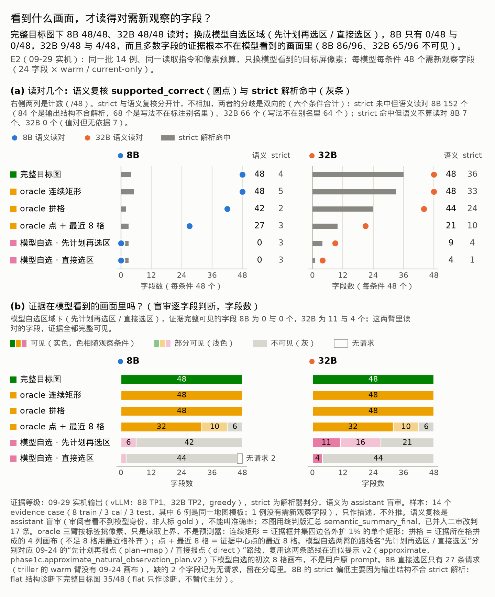
图 E-01｜同一批 case、同一读取条款和像素预算下，只换模型看到的目标屏像素，需新观察字段读对多少（上）、证据在不在画面里（下）；每模型每条件 48 个字段；语义为 assistant 盲审终判（一审全量、二审抽查并统一口径），非人标 gold，strict 为解析器判分，二者分开计；09-29 实机输出；oracle 三臂用标签选像素，只是读取上界；模型自选两臂（先计划再选区 / 直接选区）对应 09-24 的先计划再报点 / 直接报点路线，来自近似提示 v2（approximate）；14 例只作描述。
| 观察条件 | 8B 语义读对 | 8B strict | 8B flat | 32B 语义读对 | 32B strict | 证据可见 是/部分/否（8B；32B） |
|---|---|---|---|---|---|---|
| 完整目标图 | 48 | 4 | 35 | 48 | 36 | 48/0/0；48/0/0 |
| oracle 连续矩形 | 48 | 5 | 28 | 48 | 33 | 48/0/0；48/0/0 |
| oracle 拼格 | 42 | 2 | 22 | 44 | 24 | 48/0/0；48/0/0 |
| oracle 点 + 最近 8 格 | 27 | 3 | 16 | 21 | 10 | 32/10/6；32/10/6 |
| 模型自选 · 先计划再选区 | 0 | 3 | 9 | 9 | 4 | 0/6/42；11/16/21 |
| 模型自选 · 直接选区 | 0 | 3 | 4 | 4 | 1 | 0/2/44（另 2 无请求）；4/0/44 |
表注：每格分母 48；语义读对与证据可见是终判（一审 + 二审，$data/cu_model/phase1c/e2_matched_obs_20260929/eval/semantic_summary_final/），二审改判前后 32B 各格和证据可见性都没变，8B 只有拼格从 41 变为 42、点 + 最近 8 格从 28 变为 27；32B 的 flat 与 strict 相同；strict、flat 与语义分开计，不相加。主数按 R1 的门槛计。门槛若放宽为"对照整页能唯一对上"，另有 9 行会从未答改为有据正确（32B 拼格 +3、点 + 最近 8 格 +1，8B 拼格 +3、点 + 最近 8 格 +2），也就是 32B 拼格 44–47、点 + 最近 8 格 21–22，8B 拼格 42–45、点 + 最近 8 格 27–29。反方向也有一处边界：hilton-supermarket 里 9 行格边截断的门牌（"ALDI, 1"）按截断记有据正确，若算作错误细节会改记实质错误。
从上往下读这张表：
- 画面连续且含证据时，读取不是瓶颈：给连续矩形，两个模型和完整目标图一样读对 48/48。8B 的 strict 很低，主要是输出结构不合 strict 解析，flat 下完整目标图是 35/48。
- 拼格画布有小损失：8B 42/48、32B 44/48，比连续矩形少 6 个和 4 个。丢掉的字段多是被格子切开的名称和地址：restaurants、fitbit 的截断名称按 R1 记未答或不可判；8B 在 memorial 上一臂证据可见仍报
not_present，另一臂把两格文字拼成一个不存在的县名（Stonycreek County）；32B 有一条把 warm 历史里 Hyatt 酒店地址的镇名（Findlay Township）写进了 supermarket 的 Walmart 地址。这组差距不是单变量对比：拼格和连续矩形的像素集合、面积和排列都不同（拼格按 8 格预算取格，排成 4 列，格与格的相对位置和页面上不同）；R1 的门槛放宽后，差距缩到 8B 3 个、32B 1 个。 - 控制器形状损失更大：点放在证据中心，最近 8 格也只让证据完整可见的字段剩 32/48，读对降到 8B 27/48、32B 21/48。这与 §7.2 的几何结果一致：横向长条字段装不进最近 8 格。32B 在这个条件下还有 8 个字段证据可见却没作答。
- 模型自选区域几乎读不对：8B 在先计划再选区、直接选区两条路线上都是 0/48，32B 分别是 9/48 和 4/48。证据不可见的字段 8B 86/96、32B 65/96。模型选区的画布同样按选取顺序排格子。8B 在 chocolate-reviewed 和 chocolate-train 两个购物 case 的这种画布上，都把排在画布第一格的第 2 张卡当成第 1 张（chocolate-reviewed 的输出直接写了
instance='cell 27'），和 §6.4 的案例相同。
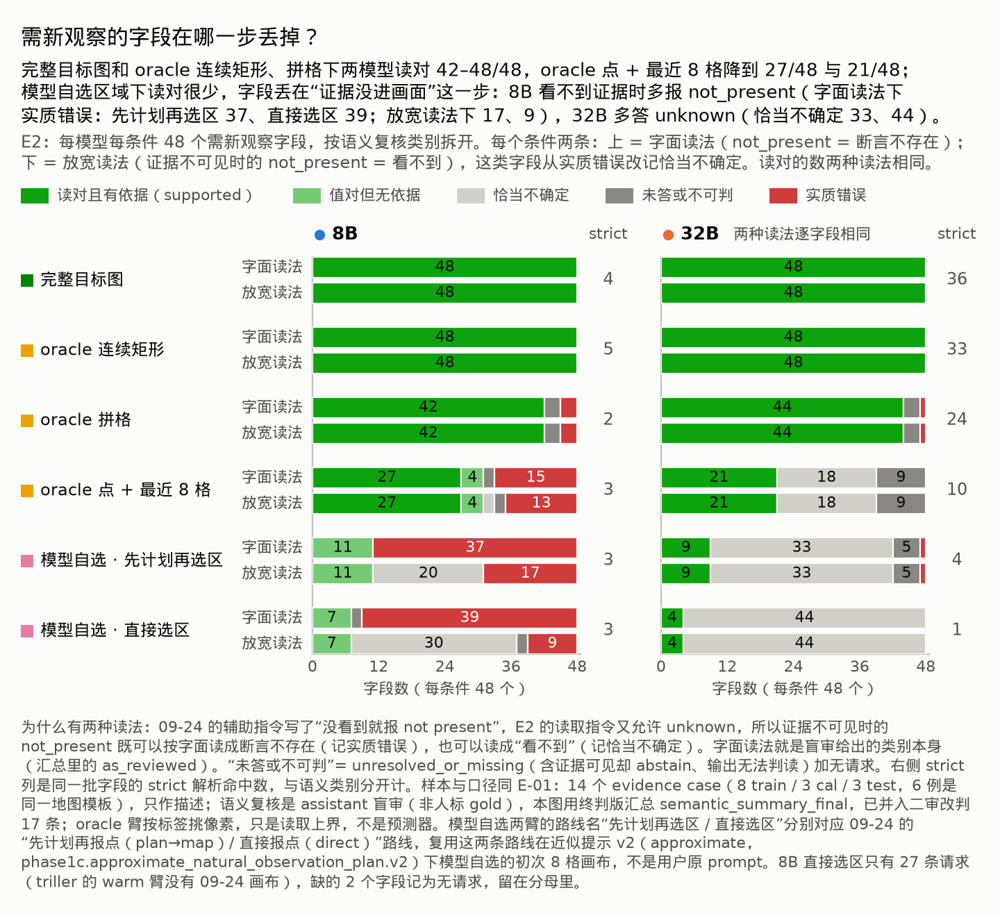
图 E-02｜每模型每条件 48 个字段按语义类别拆开：上条为字面读法（not_present = 断言不存在），下条为放宽读法（证据不可见时的 not_present = 看不到），读对的数在两种读法下相同；assistant 盲审终判（一审 + 二审），非人标 gold；模型自选两臂对应 09-24 的先计划再报点 / 直接报点路线，来自近似提示 v2（approximate）；14 例只作描述。
看不到证据时，两个模型的行为不同。32B 多数弃答：先计划再选区、直接选区分别有 33/48 和 44/48 记为恰当不确定。分母是全部 48 个字段；先计划再选区的 33 个里，21 个证据完全不可见，12 个部分可见，直接选区的 44 个都是证据不可见。8B 多数给出具体值或断言不存在：按字面读法，先计划再选区、直接选区的实质错误是 37 和 39，另有 11 和 7 个"值对但无依据"。为什么报两种读法：09-24 的辅助指令写了"没看到就报 not present"，E2 的读取指令又允许 unknown，所以看不到证据时报 not_present 有歧义。二审统计，账本 670 行里有 111 行的字段状态或值是 not_present（单位是复核行，含前缀已知字段），其中 100 行来自 8B；32B 一般用 unknown 表达弃答。这 111 行按约定一律没有改判，所以两种读法分开报：按放宽读法，8B 两个模型选区条件的实质错误降到 17 和 9，32B 逐字段不变，读对的数也不变。8B 的实质错误有多少，主要看这条读法怎么定。这和 §6.2 里 L3a 的口径问题是同一件事，需要一个统一的判法。
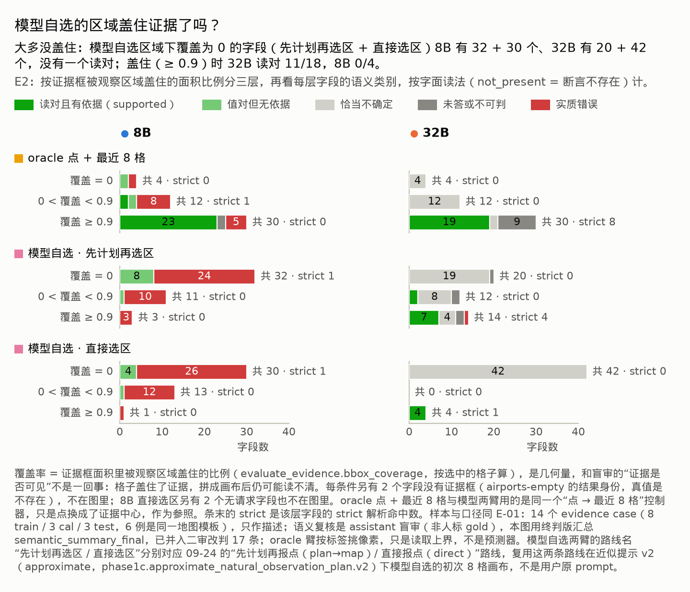
图 E-04｜按证据框被观察区域覆盖的面积比例（几何量，CPU 复算）把字段分成三层，每层再按语义类别（字面读法）拆开；覆盖率与盲审的"证据是否可见"不是一回事；assistant 盲审终判（一审 + 二审），非人标 gold；oracle 点 + 最近 8 格作为同一控制器的参照；模型自选两臂（先计划再选区 / 直接选区）对应 09-24 的先计划再报点 / 直接报点路线，来自近似提示 v2（approximate）。
模型自选的区域大多没盖到证据：覆盖为 0 的字段，8B 在先计划再选区、直接选区下有 32 和 30 个，32B 有 20 和 42 个，其中没有一个读对。盖住了（覆盖 ≥ 0.9）的时候，32B 读对 11/18，8B 0/4（样本很小）。每个条件另有 2 个没有证据框的字段（airports-empty 的结果身份，真值为不存在）不在这张图里。盲审复核者还指出，模型自选区域经常落在刚发动作的位置附近，例如多个购物和应用商店 case 的画布都是屏幕右下角同一组格子。按 §5.4 的同格统计，这主要出现在直接选区上（32B 与本步动作同格 13/14、12/14，先计划再选区 2/14、0/14）。
strict 与语义在 E2 里同样是双向分歧（六个条件合计，终判）：strict 未中但语义读对的，8B 152 个（其中 84 个只是输出结构不合解析，68 个是写法不在别名表里），32B 66 个；strict 命中但语义不算读对的，8B 7 个、32B 0 个，全是"值对但无依据"，即值与真值一致、但模型看到的画面里没有支持它的证据。
局限：14 例、48 字段是描述性的小样本，其中 6 例是同一个 OSM 地图模板，不外推；这是单轮、不许补看的受控读取，不等于带补看的真实链路；三个 oracle 条件用了标签；模型选区画布来自 09-24 的近似提示 v2，不是用户原 prompt；语义终判仍是 assistant 盲审，二审只有一名审阅者、抽查 92 行（13.7%），R1 的门槛要靠判断，敏感区间见表注。
出处：reports/figures_20260929/experiments/{E-01,E-02,E-04}.table.json、reports/figures_20260929/experiments/FIGURES.md；$data/cu_model/phase1c/e2_matched_obs_20260929/{manifest.json,requests/,predictions/,eval/}，其中终判汇总在 eval/semantic_summary_final/，二审的方法、一致率、改判与敏感性在 eval/second_pass/SECOND_PASS_REPORT.md；脚本 scripts/phase1c/{build_matched_observation_requests.py,evaluate_matched_observation.py,aggregate_matched_semantic.py}；reports/synthesis_20260929/E_RESULTS_BRIEF.md。
8.4 小结：连续画面下读得对，受限链路的问题在选区和证据判断
E2 是单轮、不许补看的受控读取。它说明：画面连续且含证据时，读取不是瓶颈；拼格画布有小的损失，主要是名称被格子截断；点 → 最近 8 格控制器的损失更大；模型自选的区域大多没盖到证据，直接选区的画布常常就在刚发动作的位置（§5.4）。
09-24 的真实链路可以补看，画面是按选取顺序拼的格子。§6.2 的断点层级是 09-29 作图代理在 09-25 复核账本上派生的编码，不是 09-25 的原始标签。按这套编码，L1（选区和补看都没覆盖证据、模型合理放弃）8B 在两种对称口径下是 5–16/56，32B 是 13/56；L2 + L3 8B 是 25–34/56，32B 是 22/56；没看到证据的最终回答，8B 至少 16/56，32B 至少 13/56。编码按 L2 > L3 > L1 取主层，另有 8B 6 条、32B 8 条 L3b 回答里也有一个字段确实看不到。
两边合起来，受限链路的错误主要来自两处。一是看哪里：选区盖不到证据。二是证据够不够的判断：没看到却写成不存在，已知字段报 unknown（L3b 两个模型各 12/56）；在 E2 的单轮读取里，这表现为 32B 看不到就弃答，8B 看不到还会给值或断言不存在。画面怎么拼可能也有影响，还没有定论：E2 里 oracle 拼格的失分主要是名称截断；按选取顺序排格导致认错卡片的例子出在模型自选的画布上（§8.3、附录 A.6）；一部分 L2 未必与排序有关，例如把街名当实体、把地图 marker 当列表首项（§6.2、§6.4）。旧 adapter 这边，E1 说明 28 行旧数据训练出的主要是输出格式和模板。
对 09-27 方案（§7.3）的含义：第一版保持单矩形文本 ROI。监督的首要对象是 predict 这一步，要从 prefix 落到含证据的区域；其次是 check 和补看：看不到证据就补看或弃答，已知字段不要报 unknown，并统一 not_present 与 unknown 的判法。连续区域渲染作为 renderer 的默认设置，不当监督对象；旧的拼格画布留作对照，严格的"只改 renderer"对照是建议的下一步。能不能从 prefix 预测出这些区域，要等新数据训练后才能测，数据卡在 framework 产数上。
9. 更新后的结论、下一步与需要你决定的事
9.1 与 09-29 交接文档相比，哪些判断变了
对照 HANDOFF_CODEX_TO_CLAUDE_20260929.md 的第 2–6 节，以及它引用的旧报告：
| 此前的说法 | 现在的说法 | 依据 |
|---|---|---|
| 受限观察链"8B 90 条里 4 条完整受支持，32B 56 个最终回答里 20 条"（交接文档） | 同单位是 8B 4/56 对 32B 20/56，rubric 不同，不排名 | §6.2 |
| 12.5% 预算下"8 个网格只能覆盖 12/13"（交接文档） | 任意 8 格 12/13；现有点 → 最近 8 格控制器给最优点也只有 9/13；单矩形 13/13 | §7.2 |
| 32B 先计划再报点 12/23、10/23，高于固定中心 6/23（交接文档） | 数不变；多出的命中全部来自 6 个同模板地图 case，train 调点就有 17/23，所以不能说超过位置先验 | §4.2 |
| 前 8 格命中 warm 相对 current-only 没有净收益，8B 19 对 21、32B 16 对 19（交接文档） | 数不变；补上复制动作的基线（56/111）后，看得出模型选区接近随机和固定中心 | §3.1 |
| 32B 原生焦点 9/24，说明输出接口会遮蔽部分空间能力（STAGE1 报告） | 9 个命中全部也是复制动作的命中，17 个可比样本里 15 个在半格以内；8B 的 5 个命中也是 | §3.4 |
| "给完整目标图时读得很准"（交接文档第 3 节） | 单轮、不许补看时，连续矩形裁剪下同样读对 48/48（终判）；模型自选区域几乎读不对，证据多数不在画面里；带补看的真实链路里，错误还来自证据判断和认错实例（§6.2） | §8.3、§8.4 |
| 旧 adapter 的 adapter-inference-smoke 从没跑过；同协议 base/adapter 对照待做 | r2 权重不可读，重训的 r3 与 r2 逐位相同；smoke 2/2；E1.2 显示学到的主要是输出格式和模板，与 silver 完全一致 0/213 | §8.2 |
| 同批 case 的三方对照（完整目标图、oracle 证据 crop、模型自选 crop）待做 | E2 已完成推理、一审和二审：连续矩形 = 完整目标图 > 拼格 > 点 + 最近 8 格 > 模型自选区域 | §8.3 |
| 每个新 pod 要重建 overlay 等容器本地状态；32B 多阶段任务用常驻引擎 | 已在新 pod 上重建并与 09-24 冻结 manifest 一致；用幂等脚本即可，镜像建议现在不建；32B 常驻驱动一次加载跑完 200 次调用，没有关闭引擎 | §8.1 |
| 没有任何作业在跑 | run 62413773 从 09-29 19:55 运行到 09-30 15:08:21，经你同意停止；现在没有作业 | §8.1 |
基座能力的总体判断（交接文档第 3 节）方向没变，但三层断点现在有了分层的量。画面连续且含证据时，读取没有问题。单轮读取时，模型自选区域大多没盖到证据，直接报点的坐标常常就是刚发动作的位置。带补看的真实链路里（09-29 派生编码），L1 8B 在两种对称口径下是 5–16/56、32B 13/56，L2 + L3 8B 是 25–34/56、32B 22/56，没看到证据的最终回答 8B 至少 16/56。E2 单轮读取、证据不可见时，32B 多弃答；8B 在字面读法下多给具体值或断言"不存在"，放宽读法下它在直接选区的回答多数是 not_present（记恰当不确定 30/48）；真实链路里已知字段报 unknown 的 L3b 两个模型都是 12/56。§3、§4 的几何"提升"要先扣掉复制动作、固定中心和地图模板的贡献再解读。E2 的语义数字是 assistant 盲审的终判（一审 + 二审），不是人标 gold。
9.2 需要你决定或提供的事
编号与第 1 节相同。第 1–6 项沿用交接文档第 5 节的编号，图 M-03 底部的 #1–#6 就是这六项；第 7、8 项是 09-30 新增的，没有画进 M-03。状态更新到 09-30：
- framework 的接口是什么，是否支持 snapshot/fork，judge 精度要不要审。批量产 silver 卡在这一项上。两个词的含义你已在 09-30 解释。"WAL judge"借的是数据库里 write-ahead log 的概念：把 agent framework 的操作记录成数据库式的 append-only 操作日志，judge 在这份日志上做判定。"visual jev"你的原话是"你可以搜一下，我认为是一个'大号 bert'"；按检索应指 JEPA 一族（joint-embedding predictive architecture，在隐空间做掩码预测），视觉版是 Meta 的 V-JEPA 2（2025-06，代码主体 MIT，声明可商用）和 V-JEPA 2.1（2026-03）。"visual jev = V-JEPA"是推断，你没有逐字确认。
- 是否认可第一版训练方法（§7.3），以及 §8.4 建议的调整：监督首要是 predict 这一步从 prefix 落到含证据的区域，其次是 check 和补看（看不到就补看或弃答，已知字段不报 unknown），统一
not_present的判法，连续渲染作为 renderer 的默认设置（还没有做单变量对照）。是否开始 S0/S1。 - 收益阈值和 CU/BU 回归容忍度。按 09-27 的约定，在 calibration 之后、看 held-out 之前冻结。
- 当初直接问模型"你认为我们下一个 step 需要看什么地方"、主观感觉效果不错时用的原始 prompt、模型和会话。§4 和 E2 的模型选区都建立在近似提示 v2 上，严格复现需要原始条件。
- 数据许可：OpenHands 轨迹没核实，WebLINX 是 CC-BY-NC-SA-4.0。
- AGENTS.md 和 README 要不要更新。README 的"最新累计入口"缺 09-27 的两份文档、交接文档和本文件。
新增两项：
- 镜像。建议现在不建，Dockerfile 草案先备着；要不要把
apply_runtime_overlay.sh接进worker_bootstrap.sh（这是改本机源文件，下次提交才生效）。如果要建，registry、命名、构建机架构等问题见 Docker 方案的"需要你拍板的"一节。 - 下一个 NPU 作业。62413773 已停，现在没有作业；下次提交（例如 S0 的 NPU 门、只改 renderer 的对照）要你批准。
另有两个口径与实验选择，主代理可以先定，你也可以直接拍板：not_present 按哪种口径计（§6.2 的 L3a 9 条；§8.3 的终判里 not_present 涉及 111 行复核记录，其中 100 行来自 8B；8B 在先计划再选区、直接选区两个条件下的实质错误，字面读法 37、39，放宽读法 17、9）；是否做一次严格的"只改 renderer"对照（同一批像素，比较连续区域、拼格和按页面位置摆放的画布）。
9.3 下一步
开发机上可以做的（不需要 NPU）：
- S0 工程：新的 ROI schema 和 manifest（split、hash、
acceptable_bundles、来源、judge 版本、分支 lineage、实际授权的像素 mask）、completion-only export、新版 mask verifier、以连续区域为默认的 ROI renderer（旧拼格画布留作对照）、正式训练入口，以及各部分单测。代码可以在开发机写，门槛（真实 processor 逐 token 检查、未来图扰动的 causal 检查）要在 NPU 上验。开不开工取决于第 2 项。 - 数据语义修复：task、prefix、target 不衔接；任务完成后没有 stop；prefix 已知的字段被当成 unknown；"第一条结果"与任意 marker 或卡片混淆。
- scorer 扩展：加入 ROI 集合、证据充分性和任务结果；统一
not_present与 unknown 的判法，并把 E2 二审定下的 R1（截断名称）、R3（证据可读却弃答）写进复核约定；冻结 schema 与别名敏感性分析，旧 raw 和 strict 主分不动。 - 项目建议（未验证）：JEPA 类 judge 适合做便宜的"屏幕哪里变了"区域提议和一致性过滤，文字内容读得对不对，仍要靠 VLM 或规则抽查。可以先用 E2 里 13 个有证据框的 case 做一个小的可行性检查：看动作前后两屏的稠密特征差能不能盖住证据框。
需要 NPU 的（efficient_910c，同时最多 1 个 node，每次提交都要你批准）：
- S0 的 NPU 门；数据到位后 S1 文本 ROI SFT，再 S2 rejection-SFT。
- 建议：只改 renderer 的对照（同一批像素，比较连续区域、拼格和按页面位置摆放的画布）。
- 次要：32B TP2 关闭后故障的根因（试验可能直接让 pod 失效，要先得到你同意，放在最后做），以及 prefill、decode、TTFT 的实测。
附录 A 撤回或修正的说法
按来源阶段分组。"依据"里的文件都在 docs/ 或 reports/ 下；切片摘要在 reports/synthesis_20260929/digests/（s1–s6）。旧文件都保持原样，引用旧数时以本表为准。
A.1 Phase 1 / 1b（09-23）
| 原说法（出处） | 现在的说法 | 依据 |
|---|---|---|
选区热图色标 "Selection probability"、"Probability difference"；metrics.json 键名 *_selection_probability（scripts/phase1/analyze.py:3030,3039） |
那些值是入选频率（入选次数 / n），不是概率、置信度、attention 或准确率；新图改用每格份额（入选次数 / 8n） | P1-03；s1 §7-1 |
| 零训练选区与 warm/current-only 的比较，旧图和主表没有位置复制基线 | 复制动作 k=8 覆盖 56/111，模型 16–21/111；去掉同位置对照后 29/84 对 12–15/84 | P1-01；s1 §7-4 |
32B 原生焦点从 2/24 到 9/24，"输出接口会遮蔽部分空间能力"（STAGE1_COMPREHENSIVE_20260923.md:11） |
9 个命中全部也是复制动作的命中，15/17 在半格以内；8B 原生的 5 个命中也全部是 | P1-04；s1 §7-5 |
| 原生焦点 32B current-only 10/24（float 并列草稿） | 权威值 9/24（整数平方距离，按格号破平） | phase1_execution.md:65 |
| 32B ref 可见子集 warm 对 current-only "11 对 12" 与旧图的 9 对 12 | 两个分母：73 例全分母、格式失败计未命中是 11 对 12；63 例两臂都有效的子集是 9 对 12 | P1-03；s1 §7-2 |
| "不同动作新位置 84 个" | 应叫"去掉同位置对照后的 84 个"：15 个没有动作点、位置未知，mobile 永远判不成同动作；复制动作 29/84 是保守值（有点的 69 个里 29 个） | reports/figures_20260929/phase1/FIGURES.md 口径问题第 4 条 |
| 8B full-target 下一次点击 26/111 | strict 23 + 单对象数组适配 3；09-25 语义复核用的是 strict 23 | s1 §7-15 |
| "不能据 195/240 对 186/240 说 8B 更准" | strict 层面仍成立；09-25 看图复核里 8B 明确错误 2 条、32B 17 条（assistant 复核） | §6.1；s1 §3 |
"Final SFT prototype：V1 339 行 / 113 transition"（phase1_execution.md:28） |
先被 P2 111/333 取代；原三分支对话不能用 all-assistant loss | phase1_sft_data.md:5；phase1b_mechanical_audit.md:11–16 |
"最有价值的产物之一是 303 条经 32B 接纳的 SFT 银标样例"（PHASE1_RESULTS_20260923.md:9） |
语义审查后只有 28 条分支级 completion 获 assistant 支持，来自 12 个 transition，其中 11 个与 eval111 重叠 | STAGE1_COMPREHENSIVE_20260923.md:180；PROJECT_REVIEW_SFT_READINESS_20260927.md:54 |
"mobile 相似度 ≥0.80 是更高质量的 silver 子集（20/31）"（phase1_execution.md:30） |
撤回，只能叫 heuristic-high-similarity | phase1_visual_audit.md:5,74 |
V1 报告"有 52 条预测输入含被扣留的目标图"（reports/phase1_live/summary.md:15） |
把合法重访误算成泄漏，最终泄漏为 0 | reports/phase1_20260923/summary.md:13 |
reports/phase1_live/ 的全部指标和 3 张 PNG |
partial V1，已作废；图内没有作废标记，不要引用 | phase1_execution.md:35–36,42 |
| 最初的 unrelated 对照（shard03） | 由 v3 对照替换；archive/ 下旧输出不得进入分析 |
phase1_execution.md:24 |
WebLINX 的 27 行、24 行文件叫 "v1"；in_session/ v1 作为 predictor 输入 |
WebLINX 只认 v2 strict 38 行；in_session/ v1 含目标知情提示，禁用，只认 v2 |
phase1b_web_sources.md:180–192；phase1b_in_session_mining.md:62,81 |
| AndroidControl 首轮印象（30/30 时序可读） | 第二轮更严格审查出 1 条 reject、1 条 review | phase1b_mobile_sources.md:208–212 |
| eval111 被当作"冻结评测"、默认 held-out | split 87/6/18，从来不是纯 held-out；加载 adapter 时要按 session 排除 14 条 | PROJECT_REVIEW_SFT_READINESS_20260927.md:68 |
| gallery 的逐例回放当正文证据 | 选例按 warm/cold 分歧排序，补看节 30 例全是 32B，"Raw revisit response" 实为第二轮回复；只作审阅附件 | s1 §4.5 |
A.2 09-24 基座诊断
| 原说法（出处） | 现在的说法 | 依据 |
|---|---|---|
| 诊断用的提示是 "approximate_prompt_v1" | 是近似提示 v2 phase1c.approximate_natural_observation_plan.v2（英文指令）；v1 在出任何模型输出前作废 |
PREDICTION_DIAGNOSTICS_PREPARATION_20260924.md:113–117；s2 §7-1 |
| 32B 先计划再报点"高于固定中心"被读成超过位置先验 | 只超过固定中心；train 调点 17/23；多出的命中全来自 6 个同模板地图 case | D-02；s2 §7-2 |
| 直接报点 2/23（容易被读成"直接报点能力差"） | 32B 直接报点两臂各 8/14 与复制动作选格完全相同（同格判法 13/14、12/14）；复制动作在本池 0/23，主要反映标签类型与这个启发式不匹配 | D-03；C-01；s2 §7-3 |
| 中期稿"局部 check 0/44" | 撤回，没有这个分母，改为每条件 0/24 | BASEMODEL_PREDICTION_DIAGNOSTICS_INTERIM_REVIEW_20260924.md:17,27 |
| "显著提高"、"significantly improves" | 改为"在描述统计上提高"，全程没做显著性检验 | BASEMODEL_PREDICTION_DIAGNOSTICS_CLOSEOUT_REVIEW_20260924.md:18；phase1c_execution_20260924.md:879–881 |
| 32B 选格图首版标题写成 8B | 作废，改用 figures_r2 |
reports/prediction_diagnostics_runs/20260924_approx_plan_v2_32b_reviewed_r1/figures/TITLE_ERRATUM.md |
| 8B 完整图 strict 4/48 代表"看不清" | 27/28 条回答把值放在顶层；flat 后 35/48；09-25 核心语义 48/48 | §6.1；ROLLOUT_SEMANTIC_AUDIT_20260925.md:54–65 |
| C 层 strict（8B 0/24、32B 3/24）直接等于读错 | strict 低估了语义，但受限链确实弱；32B 38 个值不符里 25 个等义、4 个错、9 个不确定，不加回主分 | §4.1、§6.2 |
| 32B C 层每条件 3/24（旧报告只给总数） | 每个条件各有 1 分来自期望不存在的字段；先计划再报点 · current-only 那 1 分在最终决定为 abstain 时照样计 | D-01；s2 §7-6 |
| HF/vLLM 字段读出 54/56 一致 | 其中 52 个两边都读成 null，不是语义等价 | PHASE1C_LIVE_RESULTS_20260924.md:210 |
| A 层 8B 15/28 对 32B 24/28 可以比大小 | 两模型评审 rubric 不统一，只作历史辅助；32B 第二审 28/28 全判 supported | ROLLOUT_SEMANTIC_AUDIT_20260925.md:79；s2 §7-4 |
"用户直觉在 32B 上获得方向一致的 case-study 证据"（BASEMODEL_PREDICTION_DIAGNOSTICS_20260924.md:265） |
只限计划文本和几何；没做同字段配对路线对照，不能宣称路线有或没有功能优势 | ROLLOUT_SEMANTIC_AUDIT_20260925.md:99 |
| 准备阶段"没有模型输出、推理未执行" | 已被 09-24 实机结果取代 | HANDOFF_BASEMODEL_PREDICTION_20260923.md:3 |
数据名 cold |
指 current-only（仅当前屏：当前屏 + 已发动作），不是"无信息" | HANDOFF_BASEMODEL_PREDICTION_20260923.md:43 |
| 8B C 层失败归因先计划再报点 · warm 为 0/3/6/15（s2 摘要手工归类） | 用项目聚合器重算为 0/3/7/14，差一个字段（restaurants 的 result_status） | reports/figures_20260929/diagnostics/FIGURES.md |
A.3 Phase 1c 实机工程（09-24）
| 原说法（出处） | 现在的说法 | 依据 |
|---|---|---|
| AGENTS.md 与 09-23 交接："尚无 SFT optimizer step 或 vLLM vision 成功" | 已过时，09-24 两条线都过了工程门 | 项目 CLAUDE.md；§5 |
"adapter 从没在评测里加载过"；terminal audit 的 adapter_inference_smoke = null（09-24 落盘；M-02 初版） |
只是 09-24 落盘时的状态；09-29 起补做了 smoke（2/2）和同协议配对 E1.2 | §8.2；reports/figures_20260929/method/FIGURES.md |
| C-05 初版图注："predict 样本要预测证据落在哪些格" | predict 的监督目标是记录的下一次点击框（future_action_box_silver），不是证据框；hilton-supermarket 的重合是个别巧合 |
§5.1；reports/figures_20260929/LAYOUT_REVIEW.md X1 |
reports/phase1c_evidence/README.md："还没有 Phase 1c 模型预测" |
过时，至今没更新；模型图 09-24 已生成 | s3 §3 |
| 32B TP2 关闭后的平台故障只记了出事的两次 | 分母是 4 次关闭里 2 次；8B TP1 关闭 15 次都没出事；只是时间先后 | C-03；s3 §8-3 |
pod1 "A 阶段的 0-byte 输出永久保留"（PHASE1C_LIVE_RESULTS_20260924.md:90,367） |
文件层面不成立：pod3 用 --resume 写的是同一个文件，0-byte 状态只剩文字记录和 begin.json |
s3 §8-2 |
| 旧 warm − current-only 差值图右下角的 −6 | warm 臂 6 条格式无效的点被剔除所致，它们指向的位置与 current-only 相同 | C-01 |
| 8B raw 4/48 对 32B 18/24 的跨模型差距 | 大部分来自 response schema，flat 后 8B 35/48 对 32B 36/48 | PHASE1C_LIVE_RESULTS_20260924.md:222 |
| 第一次 terminal audit 拒绝 r2 | 审计脚本写死了旧像素值；改成显式 100352/401408 后通过，结果不变 | PHASE1C_LIVE_RESULTS_20260924.md:62 |
| 8B smoke audit r1 为 fail | r2 为 pass_with_adapter，但 raw strict 仍是 3/4，两个口径并报 |
PHASE1C_LIVE_RESULTS_20260924.md:196–198 |
其他版本号与快照：CPU 回归 179/204/217；17:23 恢复快照 objective_complete=false；staged pair audit 4/33；09-23 交接里的 train_smoke SHA be60a339… |
最终为 225 passed；收口状态 objective_complete=true；正式 pair audit 33/33；r2 实际用的 train_smoke SHA 是 018e24ed… |
s3 §3、§8-7 |
A.4 语义复核（09-25）
| 原说法（出处） | 现在的说法 | 依据 |
|---|---|---|
受限观察链"8B 90 条输出中 4 条、32B 56 个最终条件中 20 条"（ROLLOUT_SEMANTIC_AUDIT_20260925.md:11，交接文档:34，09-27 复盘:78 沿用） |
同单位 8B 4/56 对 32B 20/56，rubric 不同，不排名 | A-02；s4 §7-1 |
| 受限观察链、断点编码和案例图没有标提示来源 | 这些输出都来自近似提示 v2（approximate），不是用户原 prompt | A-01 ⑤、A-02、A-04；reports/figures_20260929/LAYOUT_REVIEW.md X3 |
| A-01 初版的"Phase 1 下一步点击 23/111 → 46/111" | 是目标屏完整可见的 full-target 点击，和 P1-02 的受限观察链（落框 2/111）不是同一任务 | §6.1；reports/figures_20260929/LAYOUT_REVIEW.md X2 |
| 用 "Oracle" 指 Phase 1 的显式 query 定位任务 | 改称显式 query 定位（Phase 1 grounding 任务）；oracle 只指离线标注的证据（oracle 证据裁剪、oracle 标注几何） | reports/figures_20260929/LAYOUT_REVIEW.md 第 7 节 |
| 断点编码用 P 表示协议阻断 | 改记 B，免得与 plausible 的 P 混淆；数值不变 | A-02；reports/figures_20260929/audit/FIGURES.md |
完整目标图只有 strict 与 flat，语义读取能力未知（SUBAGENT_SYNTHESIS_20260925.md:31） |
两模型核心语义都是 48/48（8B 要求完整地址时 47/48） | A-01 |
C 阶段"尚未显示 plan 相对 direct 的聚合字段优势"（SUBAGENT_SYNTHESIS_20260925.md:29） |
strict 保留不改；语义上先计划再报点对直接报点的方向两模型相反，不宣布路线优势 | §4.4；s4 §7-6 |
| 32B 38 个值不符为 25 等义 / 4 错 / 9 不确定 | 这是早先的有界复核，已被全量复核接替，禁止把 25 项加回主分 | reports/semantic_rollout_audit_20260925/REVIEW_CONTRACT.md:30 |
| 显式 query 定位初判"同名即等价、附近即命中" | 回原图复查后，22 条初判 supported 里 9 条降级，另有 4 条 plausible 改为错误 | phase1_layout_oracle/ORACLE_QA_CHANGES.md |
| Phase 1 行动 133 条升级初判 42 S / 91 P | 终判 41 S / 60 P / 30 E / 2 U，38 条改类 | A-03 |
32B memorial 的 instance="cell25" 算事实错误 |
root QA 撤销，该回答计入 20 条干净回答 | diagnostic_32b/qa_overrides.json |
| layout 195/240、186/240 是准确率 | 只能叫 silver agreement；silver 有 16 对假阳、21 对假阴 | §6.1 |
8B airports-empty 的 not_present 回答 |
记为合理不确定；但同样输出在其他地图 case 记实质错误，口径依赖离线真值，待定（E2 同样遇到） | §6.2、§8.3；s4 §7-2 |
| 历史 115 个越界坐标 | 正式判定保持 unresolved，原生尺度解释只作后验视图 | ROLLOUT_SEMANTIC_AUDIT_20260925.md:121 |
| s4 摘要："整个审计中唯一放宽的是 cell25" | Phase 1 行动升级里另有 3 条 P→S；全审计改判 52 处，收紧或转未决 48，放宽 4 | A-03；reports/figures_20260929/audit/FIGURES.md |
| s4 摘要："跨 tile 的页面顺序只能靠 cell 编号还原" | 请求文本逐个列出了每个 tile 的原图坐标；问题在画布的视觉排列按选取顺序 | reports/figures_20260929/audit/FIGURES.md |
| s4 摘要："32B strict 全对 4/56（其中 Rainbow 的 4 个回答分母为 0）" | strict 全对的 4 条是 tab-size 先计划再报点两臂和 airports-empty 直接报点两臂；rainbow-csv 的 4 个回答没有需新观察字段，不计 strict 命中 | reports/figures_20260929/audit/FIGURES.md |
A.5 SFT 就绪复盘与方法（09-27）
| 原说法（出处） | 现在的说法 | 依据 |
|---|---|---|
| "Mobile3M 约 68% 重复访问、ProCUA 约 64% 含环，说明 session 内同布局新内容高频" | 撤回：两者都没有给出本项目需要的频率；以后只在真实任务 session 上统计 | PROJECT_REVIEW_SFT_READINESS_20260927.md:39 |
| URL 或任务模板近似 layout 真值，现成 embedding 普遍不适用 | 都只作候选信号，在独立审过的 hard pair 上比较 | 同上:40 |
| attention pilot 与 hidden-state probe 验证了预观测信号 | 从没运行，降为可选诊断 | 同上:41 |
| 更早的同 session 历史应该提高选区 | 没有净收益证据；current-only 已含当前屏，不否定当前布局复用 | 同上:42 |
| 自动 layout 信号足以直接扩训练集 | 未验证；32B 接纳的 149 对里 16 对不能直接复用 | 同上:43 |
| 自然计划已带来可用的局部观察收益 | 尚未成立：几何改变了，字段或任务收益没有建立；E2 显示模型自选区域大多没盖到证据 | 同上:44；§8.3 |
| 局部观察已更省 token 或时间 | 当前实现下慢 5.9–7.9 倍，是负结论，不是"未测" | 同上:45 |
| 复盘初稿"固定 100–200 条目标、先挖尽旧来源、逐例人工批准、先验证收益再扩产" | 删除，改为 framework 规模化产 silver 与验证并行 | PROJECT_REVIEW_SFT_READINESS_CHECKS_20260927.md:42,44 |
| 复盘初稿"冻结评测不得回流" | 改为：旧 train 可在隔离后派生监督；calibration/test 和新 held-out 不回流 | 同上:36 |
| 09-23 路线：双人标注再仲裁、比较文本 ROI 与小 head、偏好/DPO | 收窄：judge 产 silver 加小份分层抽查；v1 不加 head、不做 DPO，二者按进入条件后移 | SESSION_PREDICTION_TRAINING_DECISIONS_20260927.md:15,111–117 |
旧输出接口 <predict>{"cells":[...]} 与点 → 最近 8 格 |
v1 换成 [0,1000] xyxy 矩形列表加连续 ROI renderer，旧 grid/canvas 留作对照 | 同上:36–39,142 |
| 交接文档"8 个网格只能覆盖 12/13" | 任意 8 格 12/13；现有点 → 最近 8 格控制器给最优点也只有 9/13 | M-01；s5 §7-1 |
| QR2"已审 11 条"读成审查通过率 | 11 条都是审后保留的候选，另 3 条审后隔离在 205 之外，11/205 不是通过率 | M-02 |
| 组件调研细节 | GUI-Eyes 的"交集除以 gt 框面积"是覆盖率不是 IoU；AQuaUI 的 p=14,b=28 与本地 Qwen3-VL 配置（patch 16、merge 2）不符 |
RESEARCH_COMPONENT_REVIEW_20260923.md:70；s5 §4 |
A.6 E2 一审数字与本报告早先版本（09-30）
| 原说法（出处） | 现在的说法 | 依据 |
|---|---|---|
E2 一审：8B 拼格 41/48、点 + 最近 8 格 28/48；拼格比连续矩形少读对 8B 7 个、32B 4 个；32B 先计划再选区恰当不确定 35/48；32B 点 + 最近 8 格有 10 个字段证据可见却没作答（本报告 09-30 早先推送的版本；reports/synthesis_20260929/E_RESULTS_BRIEF.md:33–45） |
二审按 R1、R3 改判 17 行后的终判：8B 42/48、27/48；少读对 6 个和 4 个；32B 恰当不确定 33/48；证据可见却没作答 8 个。32B 各条件的读对数和两个模型的证据可见性都没变 | $data/cu_model/phase1c/e2_matched_obs_20260929/eval/{second_pass/SECOND_PASS_REPORT.md,semantic_summary_final/}；§8.3 |
8B 在拼格画布上把画布第一格的第 2 张卡当成第 1 张（instance='cell 27'）（本报告 09-30 早先推送的版本；E_RESULTS_BRIEF.md:46） |
这些行都在模型选区的画布上（chocolate-reviewed 先计划再选区的两臂，chocolate-train 先计划再选区和直接选区的 warm 臂），不在 oracle 拼格条件里 | eval/semantic_summary_final/semantic_fields.jsonl；§8.3 |
| "visual jev"可能是 visual judge 的笔误（本报告 09-30 早先推送的版本 §9.2） | 撤回。你 09-30 的解释是"大号 bert"，按检索应指 JEPA 一族的视觉版（推断为 V-JEPA，你没有逐字确认） | §9.2 第 1 项 |
| "模型的选区还常常就是刚发动作的位置"，依据是复制动作 56/111 对模型 16–21/111（本报告 09-30 早先推送的版本 §1） | 56/111 是复制动作基线自己的命中数，不是模型复制的次数；口述网格多是整行条纹，命中低于基线。抄动作坐标的证据在模型直接输出坐标时：32B 原生坐标输出 9 个命中全是复制命中，32B 直接报点同格 13/14、12/14，先计划再报点 2/14、0/14 | §1；§3.3、§3.4、§5.4 |
| "基座能读，但还不会找该看的地方"，"瓶颈在找区域"；观察画面"不用拼格画布"（本报告 09-30 早先推送的版本 §1、§8.4） | E2 只说明画面连续且含证据时读得对（单轮、不许补看）。09-24 带补看的真实链路里（09-29 在 09-25 账本上派生的编码），L1 8B 在两种对称口径下是 5–16/56、32B 13/56，L2 + L3 8B 25–34/56、32B 22/56，没看到证据的最终回答 8B 至少 16/56；错误主要来自选区和证据判断，画面怎么拼可能有影响，未定论。连续渲染作为 renderer 默认设置；拼格与连续矩形不是单变量对比，R1 放宽后差距从 6、4 缩到 3、1 | §8.4；§6.2 |
| "工程链可以逐位复现"（本报告 09-30 早先推送的版本 §1） | SFT 重训逐位复现（r3 = r2）；推理侧是 overlay 文件 SHA、NPU 数值门和 sanity 输出 token 数与 09-24 一致 | §8.1、§8.2 |
| 旧 adapter 在没训练过的行上"NLL 降得和训练行一样多"（本报告 09-30 早先推送的版本 §1、§8.2） | 按样本类型比几乎一样（predict −3.37 对 −3.38）；整体均值训练行 −1.75、session-clean −1.54，两组样本类型构成不同 | §8.2 |
| E2 的六个条件"用同一段单轮读取指令"（本报告 09-30 早先推送的版本 §8.3） | 完整目标图条件逐字节复用 09-24 的请求；末尾的读取指令和字段输出约定在六个条件里逐字节相同，受限条件里描述画面的一句随条件变化 | $data/cu_model/phase1c/e2_matched_obs_20260929/manifest.json（task_type_decision、deviations_from_s6）；§8.3 |
附录 B 图表索引
全部图在 reports/figures_20260929/<切片>/，每张图有 .png、.svg 和 .table.json（图上全部数字、分母、源文件路径与 sha256、图注与 alt text）；每个切片目录另有 FIGURES.md，写了口径、局限和与切片摘要的核对记录；版式与用词审阅在 reports/figures_20260929/LAYOUT_REVIEW.md。作图脚本在 scripts/figures/，可重复运行。
| 图 | 回答的问题 | 分母 | 证据等级 | 正文 |
|---|---|---|---|---|
| P1-01 | 排序前 k 格是否比复制动作、固定中心、随机更常覆盖记录的下一次点击框中心 | 111 与 84 个 transition | 实机零训练，strict，silver 代理 | §3.1 |
| P1-02 | 受限观察链每一级剩多少、多少落框；同一批回答的语义复核分类 | 每模型 111 个 warm 请求；回答数另计 | 同上；语义为 assistant 复核 | §3.2 |
| P1-03 | 排序前 8 格落在哪里，条纹来自目标还是输出格式 | 热图 73 与 63 例子集，形状 111 | 实机零训练，strict | §3.3 |
| P1-04 | 32B 原生坐标的提升是否来自抄动作坐标 | 24 例；距离 16 与 17 例 | 同上 | §3.4 |
| D-01 | 先计划再报点与直接报点在 A/B/C 三层的表现 | A 每臂 14，B /23，C /24 与 /14 | 实机，近似提示 v2，assistant 盲审与复核 | §4.1 |
| D-02 | B 层命中来自哪些 case | 14 case，/23、/13、/6 | 同上，CPU 复算基线 | §4.2 |
| D-03 | 预测点更接近复制动作还是固定中心 | 每条件 14 case | 同上 | §4.3 |
| C-01 | evidence 提示下 8B 初次 8 格为什么对证据 0/23 | 14 case，23 个证据框 | 实机输出，事后观察 | §5.4 |
| C-02 | r1 为什么 OOM、r2 为什么能跑 | 28 行、240 张图 | 实机 mask 预检，事后反推 | §5.1 |
| C-03 | 引擎关闭与平台故障的时间先后 | 4 次 TP2、15 次 TP1 关闭 | 实机日志，只是时间先后 | §5.3 |
| C-04 | 哪些输入形态在哪个模型上跑过 | 8B 271、32B 248 次调用 | 实机工程 | §5.2 |
| C-05 | SFT r2 的 28 步 loss 起伏从哪来 | 28 步 = 28 条样本 | 实机训练日志，工程拟合 | §5.1 |
| A-01 | 旧 strict 或代理指标和语义复核差多少、分歧往哪个方向 | 48 / 97 / 111 / 240 / 56 | assistant 语义复核，非人标 gold | §6.1 |
| A-02 | 受限观察链断在哪一层 | 每模型 56 个最终回答 | 09-29 派生编码，基于 assistant 复核；近似提示 v2 | §6.2 |
| A-03 | 二审改判是在收紧还是放宽 | 133 条升级；42 个未命中回答 | assistant 二审与 root 裁决 | §6.3 |
| A-04 | 断点在像素层面长什么样 | 4 个挑选案例 | assistant 复核，示意；近似提示 v2 | §6.4 |
| M-01 | 证据框能否在 12.5% 预算内被完整装下 | 13 例 | CPU 复算，oracle 标注几何 | §7.2 |
| M-02 | 现有监督数据有多少、与评测重叠多少 | 各视图单位不同 | 落盘计数，CPU 复算 | §7.1 |
| M-03 | S0→S4 走到哪、哪些在等用户 | 示意图 | 设计文档，状态截至 09-30 | §7.3 |
| E-01 | 看到什么画面才读得对需新观察字段，证据在不在画面里 | 每模型每条件 48 个字段 | 实机，strict 与 assistant 盲审（终判：一审 + 二审） | §8.3 |
| E-02 | 读不对的字段丢在哪一步，not_present 的两种读法 | 每模型每条件 48 个字段 | 同上 | §8.3 |
| E-03 | 旧 adapter 学到的是格式还是能力 | 303 行，四组 | 实机，CPU 复算 | §8.2 |
| E-04 | 模型自选的区域盖住证据了吗 | 按覆盖分层的字段数 | 几何 CPU 复算 + assistant 盲审（终判：一审 + 二审） | §8.3 |
附录 C 证据文件索引
路径相对项目根 $REMOTE_HOME/cu_model；$data = $DATA_ROOT。
| 内容 | 路径 |
|---|---|
| 09-29 切片摘要（逐条复算） | reports/synthesis_20260929/digests/s1_phase1.md … s6_npu_experiment_readiness.md |
| 09-29/30 实验结果简报 | reports/synthesis_20260929/E_RESULTS_BRIEF.md |
| 图集与版式审阅 | reports/figures_20260929/{phase1,diagnostics,phase1c,audit,method,experiments}/；reports/figures_20260929/LAYOUT_REVIEW.md |
| Phase 1 冻结数据与预测 | $data/cu_model/phase1/run_20260923/requests/eval_data/；$data/cu_model/phase1/run_20260923_protocol2/predictions/{qwen3vl8b,qwen3vl32b}/ |
| Phase 1 指标、功能链与成本 | reports/phase1_20260923/{metrics.json,functional_chain.json,functional_chain.md} |
| 原生坐标与 canvas 对照 | reports/phase1_native_focus_probe/metrics.json；reports/phase1_canvas_probe/summary.md |
| Phase 1b 数据视图 | $data/cu_model/phase1b/{quality_routed_v2,in_session_v2,in_session_reviewed_v2,supervision_semantic}/ |
| 14 个 evidence case | $data/cu_model/phase1c/data/evidence_samples.jsonl（sha256 前缀 32ca544c） |
| 09-24 诊断记录与指标 | reports/prediction_diagnostics_runs/20260924_approx_plan_v2_{8b,32b}_reviewed_r1/；reports/prediction_geometry_baselines_20260924/；reports/prediction_plan_reviews/ |
| 09-24 实机工程产物 | reports/phase1c_live_20260924/；$data/cu_model/phase1c/vllm_base/20260924_infra_r2/；$data/cu_model/phase1/prompt_diagnostics/20260924_approx_plan_v2/ |
| SFT r1/r2/r3 | $data/cu_model/phase1c/training/{preflight_8b_20260924_r1,preflight_8b_20260924_r2,engineering_fit_8b_20260924_r1,engineering_fit_8b_20260924_r2,preflight_8b_20260929_r3,engineering_fit_8b_20260929_r3}/ |
| 09-25 语义复核账本 | reports/semantic_rollout_audit_20260925/（REVIEW_CONTRACT.md、global_coverage_audit.json、各子目录账本） |
| 断点编码（09-29 派生） | reports/figures_20260929/audit/{breakpoint_coding.jsonl,breakpoint_summary.json} |
| 09-27 几何与 layout 复算 | reports/method_decisions_20260927/region_geometry.json；reports/project_review_20260927/layout_reuse_crosscheck.json |
| 09-29 新作业与运行时 | jobs/phase1c/phase1c_20260929_effi_r1.hope；$data/cu_model/phase1c/run_20260929_effi_r1/{runtime,smoke,logs}/；scripts/phase1c/run_vllm_hold.py |
| E1（smoke 与 E1.2 配对） | $data/cu_model/phase1c/run_20260929_effi_r1/e1/{adapter_inference_smoke_*.json,pairs_r3/}；scripts/phase1c/eval_adapter_pairs.py |
| E2（观察画面对照） | $data/cu_model/phase1c/e2_matched_obs_20260929/{manifest.json,requests/,predictions/,hold32/,eval/semantic_summary_final/,eval/second_pass/}（一审汇总在 eval/semantic_summary_firstpass/，只作对照）；scripts/phase1c/{build_matched_observation_requests.py,evaluate_matched_observation.py,aggregate_matched_semantic.py} |
| 镜像方案与脚本 | docs/DOCKER_IMAGE_PLAN_20260929.md；jobs/docker/ |
权威文档（均在 docs/）：STAGE1_COMPREHENSIVE_20260923.md、PHASE1_RESULTS_20260923.md、BASEMODEL_PREDICTION_DIAGNOSTICS_20260924.md、PHASE1C_LIVE_RESULTS_20260924.md、phase1c_execution_20260924.md、ROLLOUT_SEMANTIC_AUDIT_20260925.md、PROJECT_REVIEW_SFT_READINESS_20260927.md、SESSION_PREDICTION_TRAINING_DECISIONS_20260927.md、HANDOFF_CODEX_TO_CLAUDE_20260929.md、DOCKER_IMAGE_PLAN_20260929.md。
附录 D 术语
| 术语 | 含义 |
|---|---|
| CU/BU | computer use / browser use，本项目的任务域。和语义类别里的 CU（值对但无证据）只是字母相同 |
| current-only / warm | 历史两臂。current-only（仅当前屏：当前屏 + 已发动作；数据名 cold）；warm（含更早历史；Phase 1 为最近 3 帧，Phase 1c 最多 6 张）。warm − current-only 只衡量额外更早历史的价值 |
| 臂 | 本文有三种用法。历史臂：warm、current-only，Phase 1 另有 unrelated 臂。E2 的观察条件：正文写"条件"，图注里写作"oracle 三臂""模型自选两臂"。E1.2 的"同样本的未训练臂"：同一样本的另一类分支（predict、visible、missing 之一） |
| unrelated 臂 | Phase 1 的对照臂：把更早历史换成别的 session 的截图，用来区分"有更早历史"和"有相关的更早历史" |
| 较早 reference | warm 历史窗口里一张早于当前步、与目标屏相似的截图（原样重访或同布局换内容）；由目标信息离线挖掘确定，只用来划子集，不在提示里标出 |
| transition | 轨迹里的一步：已见历史、当前屏、刚发动作，到下一屏 |
| 记录的下一次点击框 | 轨迹里记录的下一次点击的目标框，是 silver 代理，不等于任务所需证据，也不是唯一正确动作 |
| evidence case、需新观察字段 | Phase 1c 的 14 个案例；需要从下一屏新观察才能确认的字段（required-new，每臂 24 个，23 个有框） |
| 14 个 evidence case | case ID 形如 p1c-<界面>-<名字>。地图（OSM）6：hilton-supermarket（train），bar、restaurants、airports-empty（calibration），supermarket、memorial（test）。购物 3：chocolate-reviewed、chocolate-train、fitbit（train）。应用商店 3：instagram、triller（train），vottak（test）。桌面（VS Code）2：tab-size、rainbow-csv（train） |
| 排序前 8 格、初次 8 格 | Phase 1 模型口述的 16 个格号里的前 8 个；09-24 起由模型给的点经"点 → 最近 8 格"（nearest-8）选出的 8 格。控制器取离点最近的 8 个格心，整数平方距离，平局取格号小的 |
| 直接报点、先计划再报点 | 两条提示路线：直接报一个点（direct）；先写自然语言计划再映射成点（plan→map）。E2 里对应的两个模型选区条件写作"模型自选 · 直接选区""模型自选 · 先计划再选区" |
| 复制动作、固定中心、train 调点 | 位置基线：复制刚发动作的位置；固定中心 (500, 500)（Phase 1 写 (0.5, 0.5)）；只用 train case 选出的常数点 |
| 显式 query 定位 | Phase 1 grounding 任务：给完整目标屏和写明要点哪个控件的 query |
| layout judge | Phase 1 的布局判断任务：给两张截图，判断是否同一布局、位置能否复用；240 对，与 silver 标签比较。和 09-27 设想的造数 judge 不是一回事 |
| QR2、A→B v2 | Phase 1b 的两个候选数据视图。QR2 是三个新来源（AgentNet、AndroidControl、WebLINX）的 205 条 transition；A→B v2 是 search A→B 的 83 条（OpenHands 43、GUI-Odyssey 40）。其余视图见 §7.1 |
| oracle | 用离线标注构造的条件（oracle 证据裁剪、oracle 标注几何）。E2 的 oracle 连续矩形、oracle 拼格、oracle 点 + 最近 8 格都用标签选像素，只作读取上界，不是预测器 |
| full-target | 给完整目标屏的对照条件，用来检查可读性，不是受限观察 |
| 拼格画布（canvas） | 把选中的格裁出来拼成的受限画布；现有 renderer 按选取顺序排成 4 列，不按页面位置。§3.4 的"canvas 对照"是另一种画面：把选中像素放回原位置，其余置灰 |
| strict | 按冻结 schema 与别名机械计分 |
| flat 结构诊断 | 只把顶层字段挪进 fields 容器后重算，不改值和决定；只是诊断 |
| supported / plausible / CU / AU / E / U | 语义复核类别：内容和证据都成立 / 与任务相容但无在线结果 / 值对但无合法可见证据 / 合理不确定（恰当不确定）/ 实质错误 / 缺失或未决。这里的 CU 是 correct but unsupported 的缩写，E2 部分写作"值对但无依据"，和 CU/BU 无关 |
| 最终回答（registered final） | 每个 case × 路线 × 历史臂按冻结规则选出的最终回答，每模型 56 个 |
| OK / CU / L1 / L2 / L3a–L3c / B | 09-29 派生的断点编码：完整受支持 / 值对但无证据 / 选区没覆盖证据 / 认错实例或读错 / 证据判断出错（没看见写成不存在、已知字段报 unknown、证据已足仍放弃）/ 协议阻断 |
| 一审、二审、终判 | E2 语义盲审的两轮。一审由 6 个无上下文的子代理全量盲审（670 行）；二审另抽 92 条独立盲审，并在全表统一 R1（截断或残缺名称）和 R3（证据可读却弃答）两条口径，改判 17 行。终判是并入改判后的汇总 semantic_summary_final，本报告的 E2 语义数字都用它；一审汇总 semantic_summary_firstpass 只作对照 |
| 字面读法、放宽读法 | E2 里 not_present 的两种读法。字面读法把 not_present 当作"断言不存在"，证据不可见时记实质错误；放宽读法把证据不可见时的 not_present 读作"看不到"，记恰当不确定。早先的文件（如 E_RESULTS_BRIEF.md）把字面读法写作"原判" |
| R1、R2、R3 | E2 二审统一的口径。R1：截断或残缺的名称，改判 13 行；R2：状态字段写成 observed，一审已按语义处理，改判 0 行；R3：证据可读却弃答，改判 4 行 |
| root | 09-25 复核里主持审计、做抽查和最终裁决的 Codex 主代理，不是人工复核，也不代表你的同意 |
| adapter | 本文的 adapter 都指 8B 的 LoRA adapter。另有两处同名不同义：09-24 vLLM smoke 审计的状态 pass_with_adapter，指按可空字段约定归一化后通过；§3.5 的"单对象数组的适配"是解析一侧的适配。两者都与 LoRA 无关 |
| WAL judge、visual jev | 你提到的两种低成本造数 judge。WAL judge 在 agent framework 的 append-only 操作日志上做判定（WAL 借自数据库的 write-ahead log）；visual jev 按检索推断为 V-JEPA（JEPA 一族的视觉模型），你没有逐字确认 |
| r1 / r2 / r3 | SFT 工程拟合的三次运行：r1 OOM，r2 通过（09-24），r3 在 09-29 按同配置重训，与 r2 逐位相同 |
| E1.2 的四组 | 训练过的行（28）、同样本的未训练臂（8，全是 missing；这里的"臂"指同一样本的另一类分支）、同 session 的其他样本（54）、session-clean（213，排除全部 10 个训练 session） |
| S0–S4 | 第一版方法的阶段：导出与契约、文本 ROI SFT、rejection-SFT、可选 DPO、可选 region head |